OD 531 Oral Medicine — Midterm Complete Study Guide
Built for Sully Shaikh • D3 BU Goldman • Dr. Laurel Henderson, DDS, MS • Spring 2026
PART 1 OF 5
Infectious Diseases
Britney's lecture — 9 pathologies
5-Step Clinical Framework — Used for Every Case
Britney's lecture scaffold · applies to all 6 patient cases today
🎙️ Prof used this exact 5-step structure for all 6 patient cases. Expect case questions in this format.
Step 1 Describe what you see
Step 2 Decide if you need additional information
Step 3 Differential diagnosis (3–4, most likely → least likely)
Step 4 Decide what tests are needed
Step 5 Plan
Note: Orofacial pain / neuropathies are explicitly excluded from this lecture ("not going to be an oral facial pain course"). Basic lesion description fundamentals covered by Dr. Devicky and Dr. Noonan — not repeated here.
1. Impetigo
Slides 9–13 · Bacterial · High verbal coverage · HIGH yield
Patient Case Vignette
"What do you think the patient is suffering from right now? Do you know?"
7-year-old brought in for "mouth sores." Perioral honey-colored crusts at bilateral nares and upper lip crossing the vermilion border. Sibling had similar lesions last week. Afebrile. No intraoral ulcers. Habit: nose picking.
Slide 9 — Non-bullous impetigo in a 7-year-old. Honey-colored (golden-brown) dried exudate at bilateral nares, philtrum, and upper lip crossing the vermilion border. The crust forms when serous fluid from S. aureus or S. pyogenes skin invasion desiccates — its characteristic color and location crossing the lip border are the two most exam-tested visual descriptors.
"What does differential diagnosis mean? It's a list of diagnoses we're typically looking for 3 to 4 of them and if you're making me happy they're in order of most likely to least likely. So what diagnosis do you think is most likely for this child?"
Clinical Presentation
Honey-colored crusts + "cornflakes glued to the surface" — both descriptors tested on board exams.
Characteristic honey-colored crusts on an erythematous base
Cornflakes glued to the surface
Broken skin + runny nose + warm and moist climate (risk triad)
🎙️ Prof emphasized that impetigo is caused by Staph aureus (a skin-resident organism) and streptococci — and flagged it as the most common bacterial skin infection in 2–5 year olds. Both the organism and the age group are testable.
Mnemonics
Think little cornflakes on the face — visual memory hook for honey-colored crusts
Entry formula: Broken skin + runny nose + warm and moist climate
Most common bacterial skin infection in 2–5 year olds
Management
Localized / topical: Mupirocin 2% ointment TID × 5 days
Mupirocin TID × 5 days for localized impetigo
Systemic:amoxicillin-clavulanic acid (Augmentin)
Augmentin (amoxicillin-clavulanic acid) = the impetigo systemic antibiotic dentists must know.
Kids less than 40 kg: Amoxicillin 25 mg/kg/day + 125 mg clavulanic acid in 2 divided doses
People more than 40 kg: Amoxicillin 500 mg + 125[INCOMPLETE — adult dose truncated at slide edge; verify in Neville textbook — likely 500 mg amoxicillin + 125 mg clavulanic acid BID]
Prof noted she is not a pediatric dentist and does not have pediatric dosing memorized — low-priority for this exam.
2. Syphilis — The Great Imitator
Slides 14–21 · Bacterial (spirochete) · VERY HIGH verbal coverage · VERY HIGH yield
Patient Case Vignette
"Do we need any more information about this patient? Are you ready to diagnose right now?"
28-year-old, single painless ulcer on right lateral tongue × 2 weeks. Indurated, non-tender. Painless lymph node in neck ("lump"). Denies trauma. History of unprotected oral sex 3 weeks ago.
Slide 14 — Primary syphilitic chancre: right lateral tongue. Indurated, non-tender, clean base — distinguishes from traumatic ulcer or aphthous. Painless oral ulcer → syphilis first.
5-Step Framework Answers (Slide 16)
Describe: Right lateral tongue, mid: focal mucosal-colored to white-yellow ulcer with white borders, 1.0 × 0.3 cm, indurated and non-tender
Heals on its own within 3–8 weeks (even without treatment)
Syphilis serology: false-negative window up to 6 weeks after infection. Do not rule out based on negative serology alone in the first 6 weeks.
antibodies can be negative for 6 weeks (slide 17)
Serology negative for up to 6 weeks (slide 18 — repeated)
Pathogen & Biopsy (Slide 17)
Causative organism: Treponema pallidum organisms — distribution pattern of spirochetes,
Detected by dark-field microscopy or direct fluorescent antibody staining from lesion fluid
Slide 17 — Scanning electron micrograph of Treponema pallidum showing the characteristic tight corkscrew (helical) morphology with overlaid caption "Cursed corkscrews." This gram-negative spirochete cannot be cultured on standard media — diagnosis relies on serology or direct visualization. The "cursed corkscrews" mnemonic is Britney's hook for pathology reports.
"Cursed corkscrews" = visual hook for T. pallidum morphology on pathology report
Clinical correlation with serologic testing is recommended, and the patient should be referred for appropriate antimicrobial therapy and partner notification.
Biopsy for suspicious oral ulcer: incisional, including the ulcer base AND edge (not excisional).
Slide 18 — Gallery of primary syphilitic chancres at five oral sites: oral commissure, lower lip, upper lip, tongue dorsum, and tongue lateral/floor-of-mouth region. Syphilis is "The Great Imitator" — it can appear at any mucosal site and mimic aphthous ulcers, SCC, or traumatic ulcers. The painless, indurated quality distinguishes it regardless of site. (Veraldi S. et al. 2008, International Journal of STD & AIDS, 29:486–487.)
CNS: tabes dorsalis, — neurological degeneration of posterior spinal columns
Granulomatous inflammation: gumma — large ball of chronic inflammation; tissue-destructive (NOTE: "granulomatous inflammation" is a recurring term — appears again in TB DDx and CMV DDx. Prof indicated this term would recur throughout the course.)
Palate or tongue (interstitial glossitis) — sub-bullet; NOT highlighted in source slide
Gumma = granulomatous inflammation in tertiary syphilis — causes palatal perforation. Hole in palate → tertiary syphilis on the differential.
Slide 20 — Tertiary syphilis: (top) palatal gumma — granulomatous mass → palatal perforation; (bottom) interstitial glossitis — lobulated atrophic tongue from fibrous replacement. Both are pathognomonic of late-stage untreated syphilis.
Mandatory Reporting
Syphilis (all stages) = mandatory reportable to MA DPH. Prof's "triple please" urgency — the highest-priority memorization item in this section.
Syphilis (all stages) is mandatorily reportable to Massachusetts DPH. Partners must be notified. Slide 21 is the MA DPH Syphilis Reporting Form (image not delivered — see MA DPH website for full form).
Treatment
Syphilis Rx: Penicillin G IM × 1 dose (primary/secondary). Drug-disease pairing is exam-tested.
Rx: Intramuscular Penicillin G × 1 dose (primary/secondary); longer course for tertiary/neurosyphilis
Older adults = unexpected high-risk group for syphilis — prof noted this demographic is often overlooked clinically; verbal emphasis only, no slide highlight
IgM = new/active infection (prof's hook: M = "Met" — the one you just met). IgG = past exposure (G = "Gone"). IgM + IgG together = reactivation or post-vaccination challenge.
3. Tuberculosis (TB)
Slides 22–26 · Mycobacterial · HIGH verbal coverage · HIGH yield
Patient Case Vignette
54-year-old, large deep irregular ulcer on right lateral tongue ~2.0 cm, papillary borders, heavy edema. Chronic cough ≥2 months. Sick contacts. Immune suppression from methotrexate (MTX) for RA.
Slide 22 — Secondary oral TB: deep irregular ulcer, right lateral tongue, papillary borders, surrounding edema. Distinguishes from syphilitic chancre (smooth-bordered, painless). (Montoi & Pabla 2023, BDJ)
"What kind of TB test? Do you know any TB tests?"
"Would you do excisional or incisional?"
"What would you do for this patient? They're in pain right now. Assuming we're waiting for the test to come back."
"If you're worried about TB, there needs to be some isolation protocols... Don't have them in open bays around other patients."
"If the patient has secondary TB on the tongue, if you treat the TB in the body with the medicines, will the tongue lesion go away on its own?" [ANSWER: YES]
5-Step Framework Answers (Slide 24)
Describe: Deep irregular ulcer, right lateral tongue
DDx: Secondary TB, deep fungal, SCC
Tests: NAAT (faster, ~24 hrs), PPD or QuantiFERON Gold
Plan: Medical urgency — isolation + DPH notification + ID referral; do NOT biopsy first
Lesion Reveal (Slide 24 — annotated)Slide 24 — Same right lateral tongue ulcer with a purple oval annotation marking the lesion margins. The circling highlights the irregular, papillary edge and deep excavation characteristic of secondary oral tuberculosis — features that would be queried as "describe the lesion" in a clinical exam question.
Oral TB Manifestation
Oral TB: rare, always secondary (tongue site). Presents as chronic painful irregular ulcer. Constitutional triad: weight loss + night sweats + cough.
Oral TB is rare (tongue >>>) usually secondary
Primary TB = NOT oral. Secondary TB = IS oral (almost always tongue)
IgM/IgG rule: Prof's hook — IgM = new infection ("M for Met, the one you just met"), IgG = past/resolved infection ("G for Gone"). IgM + IgG together = reactivation or post-vaccination challenge.
Management / Drug Regimen
Isoniazid + rifampin appear in BOTH treatment phases. Total course = 6 months. Highest exam priority in this lecture.
Drug regimen = isoniazid + rifampin appear in BOTH phases. Total = 6 months.
Phase 1 (8 weeks): Pyrazinamide + Isoniazid + Rifampin + Ethambutol
Phase 2 (16 weeks):16 weeks: isoniazid and rifampin
DOT = Directly Observed Therapy — nurse watches patient take every pill. Public health protocol for TB compliance.
DOT = Directly Observed Therapy (nurse watches patient take pills)
Perform biopsy only after workup (slide 25 italic — safety instruction; do not biopsy before TB ruled out)
Slide 25 — Calcified cervical lymph nodes on pano = TB sequela. Bilateral radiopaque rounds below mandibular angles → take a TB history.
"Miliary" TB = calcified foci look like millet seeds. Calcified cervical lymph nodes on pano = TB sequela — recognize at the dental chair.
Mandatory Reporting & Medical Urgency
TB = mandatorily reportable to MA DPH (same "triple please" urgency as syphilis). Link these two together.
TB = medical urgency: isolate → notify DPH → refer to Infectious Disease. Not dentist-managed alone.
Suspected TB: no open dental bays. N-95 masks + isolation required for all staff.
Prof noted there is no topical therapy for oral TB — TB topical therapy is excluded from exam scope.
Cross-reference: Viscous lidocaine / magic mouthwash for pain while awaiting TB results — see HSV Management section for magic mouthwash recipe (lidocaine + diphenhydramine + Maalox).
4. Candidiasis (Oral Thrush)
Slides 27–34 · Fungal · VERY HIGH verbal coverage · VERY HIGH yield
Patient Case Vignette
42-year-old, yellow-brown coated tongue dorsum, erythematous palate/uvula/tonsillar pillars with white patches. Uses asthma inhaler without spacer or mouth rinsing.
Slide 27 — Pseudomembranous candidiasis ("thrush") in a 42-year-old asthmatic using an inhaled corticosteroid without a spacer or post-use mouth rinse. The yellow-brown coated tongue dorsum represents confluent Candida pseudomembrane (which wipes off, leaving an erythematous base); the erythematous soft palate shows simultaneous erythematous-type involvement. The corticosteroid aerosol deposits locally and suppresses mucosal immunity, creating the ideal Candida growth niche.
5-Step Framework & DDx
"what are my differentials for this patient for these white plaques that can be wiped off?"
DDx for white plaques that wipe off: candidiasis (top), strep throat, herpangina, gonorrhea.
"Do they have an inhaler? Do they use the inhaler with a spacer? Do they wash their mouth out after using the inhaler?"
"Do they have any immune suppression? Do they have any immune compromise?"
"Anybody know the difference between immune suppression and immune compromise?"
"What is the term for clinical dryness that I can observe and measure?" [ANSWER: hyposalivation]
Xerostomia = subjective complaint. Hyposalivation = objective/measurable. NOT synonyms. Exam-tested.
Clinical Types Table (Slide 32)
Know ALL candidiasis clinical types in the table below — full exam responsibility.
Type
Key Features
Risk Factor / Notes
Pseudomembranous (Thrush)
Creamy-white plaques, removable; foul taste
Antibiotics, steroids, immunosuppression, inhaler without spacer/rinse
Denture over-closure, nutritional deficiency, immunosuppression; Rx Mycolog II
Denture Stomatitis (Chronic Atrophic)
Erythema under denture intaglio surface; patient keeps dentures in 24/7
Denture fomite — must soak/disinfect denture or it reinfects
Hyperplastic
Thick white adherent plaque — does NOT wipe off
Needs biopsy to rule out dysplasia/SCC
Median rhomboid glossitis → always check the palate. Almost always creates "kissing lesions" on the opposing palate.
Risk factor → type mapping (memorize):
Inhaler use → pseudomembranous | Dry mouth → erythematous | Dentures not removed → denture stomatitis | Thick white adherent plaque → hyperplastic (needs biopsy)
"Spaghetti and meatballs" = microscopic appearance of Candida hyphae and spores
Reinserted denture without disinfection = fomite that reinfects; patient education must include denture removal and soaking
Commissures spelling: 2 M's, 2 S's
Slide 33 — Four-panel gallery of oral candidiasis clinical types: (A) bilateral buccal pseudomembranous candidiasis with white plaques on erythematous base; (B) erythematous atrophic dorsal tongue with papillary loss; (C) severe buccal mucosa thrush with thick confluent white coating; (D) uniformly erythematous, inflamed palate consistent with erythematous candidiasis / denture stomatitis pattern — palatal erythema, not median rhomboid glossitis (MRG is a midline tongue lesion; this panel shows only the palate side; the tongue-dorsum MRG "kissing lesion" counterpart is not shown in panel D).
Slide 34 — Wikipedia "Oral candidiasis" article infobox (synonyms: oral candidosis, oral thrush, oropharyngeal candidiasis, moniliasis, candidal stomatitis, muguet). Britney included this slide as a reading-level overview — T5 de-emphasized content, not tested.
Management (Slide 30) — Highest Lecture-Time Investment of Any Disease
Candidiasis antifungals: clotrimazole, nystatin, miconazole, fluconazole — asked on exams every year.
Clotrimazole, nystatin, miconazole, fluconazole = mandatory four. Asked every year.
Trigger correction first:Rinse mouth after inhaler use, use spacer
First-line topical:Rx clotrimazole (Mycelex) — troche dissolves in mouth over 20–30 min (contact time essential); High sugar content*** — contraindicated in diabetics
Alternative topical:Alt: Miconazole — 2% gel to denture intaglio surface
Systemic option:Fluconazole — for refractory/recurrent/severe; CHECK LIVER; "rare cases of hepatotoxicity"
Nystatin solution — rinse and swallow; preferred for diabetics
Mycolog II (nystatin + triamcinolone) — for angular cheilitis
Clotrimazole = HIGH SUGAR. Contraindicated in diabetics — will be on exam. Use nystatin instead.
Azole antifungals → hepatotoxicity risk. Check liver function before prescribing fluconazole.
Azole → Liver (prof triple-drilled this association — it is the single most-repeated mnemonic in the candidiasis section)
Nystatin preferred for diabetics (no high sugar); clotrimazole has high sugar — avoid in diabetics
Angular cheilitis = treat without referral. Rx: Mycolog II (nystatin + triamcinolone). Covers both fungal + inflammatory components.
Prof made clear that only clotrimazole, nystatin, miconazole, and fluconazole are exam-tested — second-line antifungals are de-emphasized.
Bleach solution for denture soaking was noted as beyond the course scope — de-emphasized.
Candida species beyond C. albicans explicitly removed from exam scope by prof.
5. Herpes Simplex Virus (HSV) — Human Herpesvirus
Slides 35–42 · Viral · HIGH verbal coverage · HIGH yield
Patient Case Vignette
34-year-old female, right alar rim focal cluster of pinhead vesicles, erythematous base.
Slide 38 — Vesicles (small, clustered, superficial) vs. bulla (single large, deeper). HSV = pinhead coalescing vesicles, NOT bullae.Slide 38 — Clinical photo (panels a and b) of right alar rim with a focal 0.8 × 0.3 cm cluster of pinpoint vesicles on an erythematous base in a 34-year-old. The vesicles are coalescing along the nasal alar crease following the V2 cutaneous distribution. This is the canonical "describe the lesions" image used in the case presentation — Britney asked the class to characterize both morphology and location before revealing the diagnosis.
HHV 1–8 Taxonomy (Slide 35)
HHV 1–8 taxonomy = testable.
Full HHV 1–8 Mnemonic System (Britney's):
HHV1 = HSV-1 (above the belt) | HHV2 = HSV-2 ("number 2" = below the belt) HHV3 = Varicella-Zoster Virus (VZV): 'Draw a Z with three strokes' HHV4 = Epstein-Barr Virus (EBV): 'Barr has four letters' HHV5 = Cytomegalovirus (CMV): 'Cyto makes me think of cinco' HHV6 & HHV7 = Roseola (6th disease — "You don't really need to know much about it.")
HHV8 = Kaposi's sarcoma + lymphoma + Castleman disease — Prof's hook: HHV-8 → think HIV (CD4/CD8 context); verbal alpha only, may not appear on slides
V1 vs. V2 Distinction (Slides 37–39)
V1 zoster: always ask about vision. V1 = ophthalmic branch = ocular risk. Medical urgency question.
"The medical urgency question is how is your vision? Is there anything on your eye?"
V1 (ophthalmic): Risk of herpes zoster ophthalmicus (HZO) — can be blinding; refer to ophthalmology urgently if eye involved
V2 (maxillary): Palatal involvement; less immediately sight-threatening
Hutchinson's sign (nasal tip vesicle) = VZV, nasociliary branch → potentially blinding. Optic keratitis = HSV, less severe. Same V1 territory, different severity.
Slide 41 — Primary herpetic gingivostomatitis (6 panels): perioral crusting, palatal ulcers, severe generalized ulcerated gingiva. Most common cause of severe acute gingival ulceration in children <5. Bilateral + painful + febrile = HSV, not aphthous.
Secondary (Recurrent) HSV (Slide 40)
Recurs in the same nerve/dermatome as original inoculation
Recurrence site: Keratinized tissue (vermilion border, hard palate, attached gingiva)
Adults: pharyngotonsillitis, rarely Bell Palsy (facial nerve), vestibular neuritis
HSV recurs in the same nerve/dermatome as initial inoculation
Children — avoid: Lidocaine (seizures), benzocaine (methemoglobinemia)
Cross-reference: Magic mouthwash also used for TB tongue pain while awaiting diagnosis — see TB section above.
6. Cytomegalovirus (CMV) — HHV5
Slides 43–48 · Viral · MEDIUM verbal coverage · MEDIUM yield
Patient Case Vignette
36-year-old female, HIV+, not on ART. Multiple large necrotic ulcerations: maxillary tuberosity (A), lateral tongue (B), upper lip mucosa (C), lower lip vestibule (D). GI pain, weight loss, fevers.
Slide 43 — Four-site oral CMV ulceration in a 36-year-old HIV-positive female not on antiretroviral therapy. (A) Large necrotic ulcer at maxillary tuberosity/posterior upper alveolus — note the fibrinous debris and deep excavation. (B) Large necrotic ulcer extending along the right lateral tongue to the tongue tip — a linear/elongated distribution from the lateral surface to the tip, not simply a focal tip lesion. (C) Focal ulcer on right upper lip mucosa adjacent to gingiva. (D) Multiple small ulcers on lower lip vestibule. The word "necrotic" was formally introduced by Britney at this case — she defined it: "deep and there's a lot of debris... dead tissue." The multi-site pattern in an immunocompromised patient is the CMV signature.
"Necrotic" = deep ulcer with dead tissue debris. First introduced at CMV case — the CMV descriptor.
"Do we know your CD4 count? Do we know your viral load? Do we know your platelets? Do we know your neutrophils?"
"tests that I wanna do for this patient, frankly, I would do biopsy for this"
"why the weight loss? Ask why because sometimes there's no good reason for it"
GI pain in immunocompromised → favors CMV (viscerotropic). Distinguishes from TB/deep fungal.
CMV + EBV both on differential for necrotic oral ulcer in any immunocompromised patient. Treat as a pair.
CMV signature pattern: HIV+ + not on ART + GI pain + oral ulcers + weight loss + fevers
Biopsy site preference: tongue + upper lip preferred; hard palate = technically difficult
Geographic exclusion for deep fungals: No farming/bat caves/Western US = coccidioidomycosis unlikely. No Ohio River Valley = histoplasma unlikely.
Management (Slide 47)
CMV Rx: valganciclovir 900 mg (HIV/ID physician prescribes). Dentist's role = refer to Infectious Disease.
Slide-Only Highlights (Slide 48)
⚠️ Slide-only content (slide 48).
Most common cause of nonhereditary sensorineural hearing loss (slide 48 yellow — slide-only)
Biopsy: 'Owl eye' nucleus (slide 48 yellow — CMV-infected cells show large intranuclear inclusion surrounded by clear halo = "owl eye" on H&E — slide-only)
6-year-old, Koplik spots on buccal mucosa (slides 49–51).
Pathognomonic Finding
Koplik spots — "Pathognomonic bluish-white plaques on buccal mucosa (70% of patients)" — Appear 1–2 days BEFORE rash — key early diagnostic sign. (slide 52 yellow + bold — dual emphasis)
Clinical Progression
Slide 52 — Patient education infographic illustrating measles progression (S. Welker illustration, JAMA 2024, 331[11]:901–902). Days 1–2 (early prodrome, 1–2 weeks post-exposure): fever, cough, runny nose, red watery eyes (the "3 C's" — cough, coryza, conjunctivitis). Days 3–5: the characteristic morbilliform rash begins on the face and spreads cephalocaudally to the trunk and extremities. The prodromal phase with Koplik spots is the only window for early clinical diagnosis before the rash appears.
The 3 C's (prodrome): Cough, Coryza (profuse rhinorrhea), Conjunctivitis
Patient infectious 4 days before to 4 days after rash onset
20-year-old college student, bilateral parotid swelling — "chipmunk cheeks."
Slide 54–55 — Before/after comparison of a young adult male: left panel shows normal facial proportions; right panel shows the same patient with bilateral parotid gland enlargement producing the pathognomonic "chipmunk cheek" appearance. Parotitis from paramyxovirus infection causes diffuse glandular swelling rather than a discrete nodular mass — this bilateral, symmetric presentation is the canonical clinical clue. Note: 10–30% of patients with mumps have NO parotid swelling, making diagnosis rely on viral testing in those cases. (BBC Health News; bbc.com/news/health-51493496)
Clinical Pearls (Slide 58 — all bold)
CLINICAL TRAP: "Parotitis is classic BUT 10–30% have NO parotid swelling"
"Mumps is a systemic infection" — not limited to parotid glands
Complications:
"Postpubertal males: Orchitis (3–10%)"
Aseptic meningitis, pancreatitis, oophoritis
Contagious period: 1–2 days before symptoms to 14 days after clinical resolution
Vaccination & Diagnosis
"Two-dose MMR = 88% effective, but immunity wanes over time"
"Gold standard" = RT-PCR from buccal/oral swab
9. EBV Mucocutaneous Ulcer (EBV MCU)
Slides 59–63 · Viral (EBV = HHV4) · NO verbal lecture coverage · SLIDE-ONLY · VERY HIGH slide density
⚠️ Not verbally lectured by Britney. EBV appears ONCE in audio as a passing differential mention only — NOT coverage of this slide set. All content below comes from slide formatting only (slide 63 is the most formatting-dense slide in the entire lecture — 24 findings).
Patient Case Vignette
46-year-old, post-renal transplant, right buccal vestibule/gingiva at molars #18–20. Necrotic ulcer 2.0 × 2.0 cm with erythematous halo.
Slide 59 — EBV MCU: 2 × 2 cm necrotic ulcer, right buccal vestibule, post-renal-transplant patient. Fibrinous base, erythematous halo, sharply circumscribed. Mimics malignancy but self-limited; may regress when immunosuppression reduced. (Ikeda 2020)
Key Clinical Features (Slide 63 — highest-density slide in lecture)
Morphology:Appears as sharply circumscribed, shallow ulcer
Most common site: "Most common site: Oropharynx (62%)"
⚠️ EXAM FORMAT GUARANTEED: Prof stated she will include a typed clinical question — photo + describe lesion + DDx + workup + treatment plan. Practice this framework for every disease below.
⚠️ When RAS isn't RAS: Oral ulcers + fever + fatigue + weight loss + not responding to acyclovir → markedly reduced CD4 T-lymphocyte count = top differential is HIV/AIDS.
🔑 Erythematous halo = RAS on your differential — "EASY POINTS"
Yellow-white fibrinopurulent membrane surrounded by a red halo. If you see it, put RAS on your list.
Erythematous halo → put RAS on your differential. Easy exam points.
🚨 AGE >40 + NEW-ONSET RAS → MANDATORY SYSTEMIC WORKUP
Always ask: "Did you have these ulcers as a child?" If no prior history + age >40 = workup for HIV, celiac disease, IBD, hematologic malignancy.
New-onset ulcers after age 40 + no childhood history = mandatory systemic workup.
RAS Variants
Type
Size
Healing Time
Scarring
% of RAS
Notes
Minor
3–10 mm
7–14 days
No
80%
Most common
Major
1–3 cm
2–6 weeks
May scar
10–15%
Labial/soft palate/tonsillar fauces
Herpetiform
1–3 mm
Variable
No
5–10%
⚠️ NOT CAUSED BY HSV — shape only! Up to 100 ulcers, may coalesce, female predominance
⚠️ TRAP: "Herpetiform" = morphologic term only (shaped like herpes clusters). These are NOT caused by Herpes Simplex Virus. The name is a red herring on exams.
“Herpetiform” = shape only. NOT caused by HSV. Immune-mediated. Do not be fooled by the name.
Complex Aphthosis: ≥3 concurrent ulcers, almost constant, severe pain → 60% have an underlying trigger → full lab workup: CBC, iron, B12, folate, Vit D, celiac screening.
Treatment / Pharmacotherapy
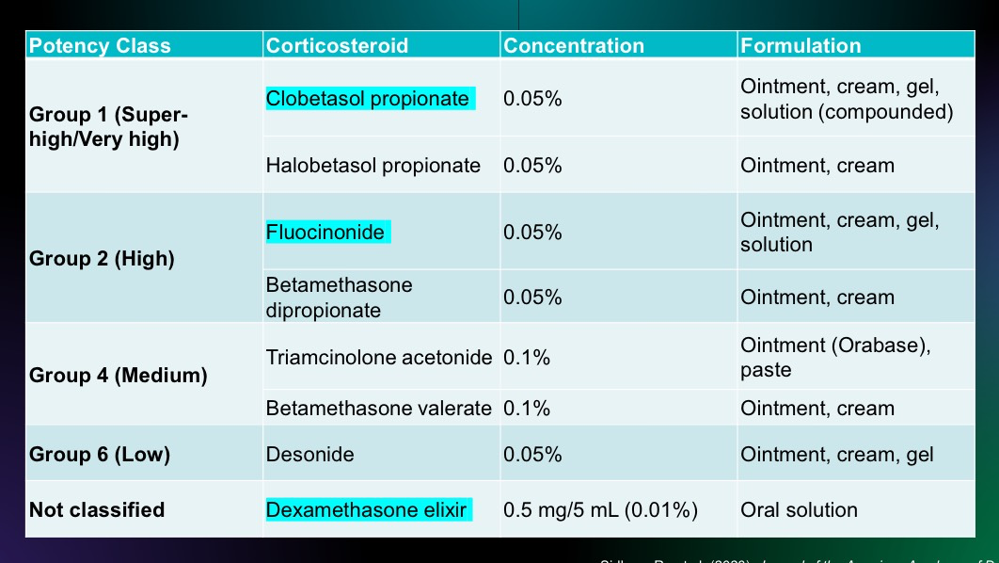
Topical corticosteroid potency by class. Cyan-highlighted picks (commit to memory): Clobetasol propionate 0.05% (Group 1 — super-high potency), Fluocinonide 0.05% (Group 2 — high potency), and Dexamethasone elixir 0.5 mg/5 mL (Not classified — the only oral-rinse formulation suitable for diffuse oral lesions). Source: Sidbury R, et al. (2009) JAAD.
💊 DEXAMETHASONE ELIXIR 0.5 mg/5 mL
Soak 5 minutes (minimum 2 min), up to QID. Soak & expectorate (or swallow per Rx).
The universal first-line oral medicine rinse — referenced for every disease in this lecture.
⚠️ If candidiasis risk: combine with nystatin solution in equal parts.
🎬 Prof's mnemonic: "My Windex" — like the father in My Big Fat Greek Wedding, she puts it on everything.
Dexamethasone elixir = the single most important oral medicine Rx. Every dentist must be able to write it.
Topical Corticosteroid Hierarchy
#
Drug
Potency Group
Potency Level
Notes
1
Clobetasol propionate 0.05% gel
Group 1
Super-High
First-line for moderate-severe. Off-label intraorally.
2
Fluocinonide 0.05% gel
Group 2
High
Gel = alcohol base = burns. Pre-numb with benzocaine first. Off-label intraorally.
3
Dexamethasone elixir 0.5 mg/5 mL
Not classified
Oral rinse
ONLY rinse formulation. 5-min soak up to QID. THE one to memorize.
4
Triamcinolone acetonide 0.1% paste
Group 4
Medium (WEAKEST)
⚠️ TRAP: Has "dental" in name → students think it's best → it's NOT. Weakest of the three.
⚠️ TRAP: Triamcinolone acetonide dental paste has "dental" in its name but is the WEAKEST of the three common oral medicine corticosteroids. Do not default to it.
"Dental" in triamcinolone's name does NOT make it the best choice — it is the WEAKEST of the three.
🧠 Gel = alcohol base = BURNS. Pre-numb patient with lidocaine or benzocaine BEFORE applying gel corticosteroid to improve adherence. Also: apply gel under gauze for 20 minutes for maximum penetration.
Note (G5): Fluocinonide and clobetasol drug inserts say "do not use intraorally" — these are used off-label. Warn patients in advance; pharmacist may flag the prescription.
🚫 DO NOT RECOMMEND SENSODYNE FOR SOFT TISSUE DISEASE
Sensodyne is one of the most irritating toothpastes for mucosal tissues. Sensodyne = good for dentin hypersensitivity, NOT soft tissue sensitivity.
Recommend SLS-free toothpastes instead: Cleure, Boka, CloSYS, Tom's (original), Verve, or Doctor Bob (the single one to remember — unflavored, SLS-free, dye-free, gluten-free).
Sensodyne is NOT SLS-free. Do not recommend for mucosal disease. Top pick: Doctor Bob (unflavored, SLS-free, dye-free).
Biopsy Indications for RAS: (1) Single ulcer present >4 weeks, (2) Atypical presentation, (3) New onset after age 40. Liberal biopsying policy — early detection catches cancer.
Loss of filiform papillae → red smooth atrophic patches
D
EMARCATED
Clear circumferential border — serpiginous white line
D
YNAMIC
Migrates location over days–weeks
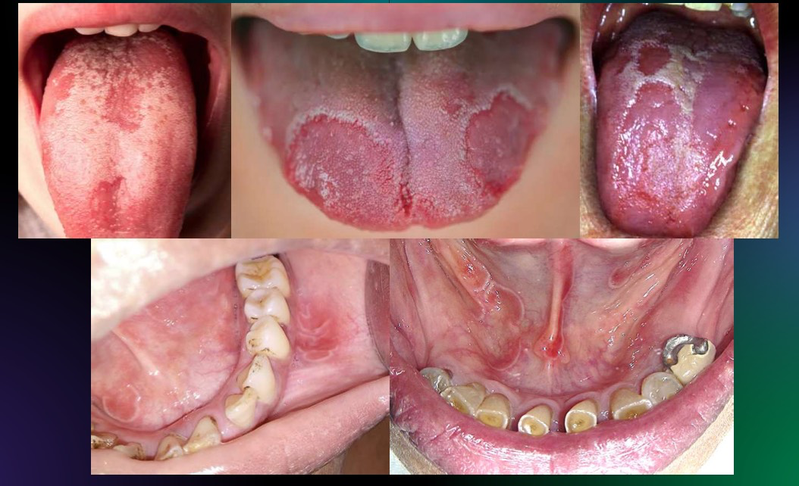
Geographic tongue: well-defined erythematous patches surrounded by a raised, white serpiginous border. The map-like pattern shifts location over days to weeks (migratory) — pathognomonic when observed.
📖 VOCABULARY WORD:SERPIGINOUS — the term for the winding, snake-like white border of geographic tongue. From "serpent."
🔑 MIGRATORY = PATHOGNOMONIC — RULES OUT MALIGNANCY
If the lesion moves location over days, it cannot be cancer. This is the most clinically reassuring feature of geographic tongue.
⚠️ TRAP 1 — White serpiginous border ≠ candidiasis. Candida scrapes off with gauze. Geographic tongue border does NOT scrape off and does NOT respond to antifungals.
⚠️ TRAP 2 — Ectopic geographic tongue: GT can appear on buccal mucosa, floor of mouth, soft palate. Still called erythema migrans. Not tongue-restricted.
DDx for Geographic Tongue
Condition
Key Distinguisher
Action
Candidiasis
Scrapes off with gauze; responds to antifungals
Trial antifungal
OLP
Wickham striae; bilateral buccal pattern
Biopsy if atypical
Erythroplakia
FIXED (does not migrate); high malignant potential
URGENT BIOPSY
Leukoplakia
Fixed white patch; does not shift
Biopsy if persistent
Erythroplakia = high malignant potential at first diagnosis. Must not be missed. URGENT BIOPSY.
Management
Status
Treatment
Asymptomatic
Reassurance only — no treatment needed. Benign condition.
Diphenhydramine Dual Role: Children's Benadryl (12.5 mg/5 mL) acts as both anti-inflammatory AND topical anesthetic on mucosal surfaces. Soak TID-QID for symptomatic GT.
Phenytoin = #1 most important. Commit all three classes to memory.
⏱️ ONSET: 1–3 months after starting the medication — classic exam timeline.
Distribution: begins at interdental papillae → spreads anteriorly and facially. Edentulous areas spared.
STEP 1: METICULOUS PLAQUE CONTROL = #1 INTERVENTION
Must optimize oral hygiene BEFORE any other step. Surgery without prior hygiene = ~35% recurrence within 18 months.
⚠️ TRAP (F11): Do NOT go straight to gingivectomy. Surgery without correcting the causative drug and optimizing hygiene = the tissue grows right back.
Bisulfites (LA preservatives); most "LA allergies" are pseudoallergic
🧠 Type I memory hook: "Type 1 — the number 1 has an E at the end → IgE." Prof repeated this three times in lecture.
Type IV — Dental Practice Presentations
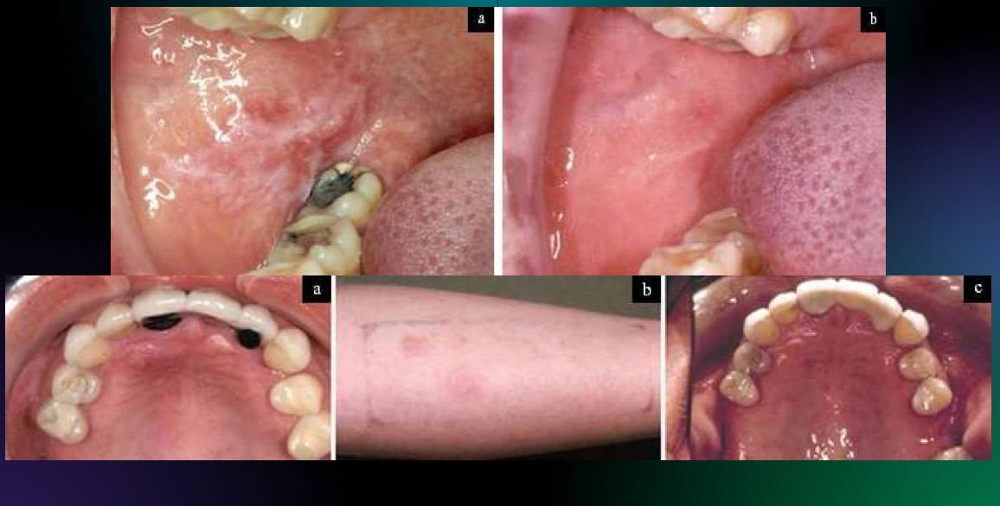
Contact reactions in dental practice: lichenoid reactions at amalgam sites (white striae/erythema); denture acrylic stomatitis (palatal erythema/sloughing); positive forearm patch test = Type IV gold standard. NOTE: patch test alone ≠ active causation — requires temporal correlation.
Patch Test — Gold Standard for Type IV, BUT: A positive patch test alone does NOT confirm causation. Must have temporal correlation between exposure and symptom onset.
⚠️ TRAP (F12): Positive patch test = sensitization history, not necessarily the current active trigger. Requires temporal correlation.
Allergic contact stomatitis presenting with diffuse erythema of attached gingiva and adjacent mucosa. Source: Zhou Y, Jin X, Chen Q (2018) Case based oral mucosal diseases.
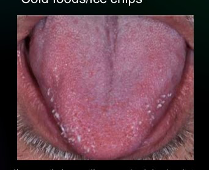
Plasma cell gingivitis (severe): fiery erythema of attached gingiva, often triggered by cinnamon, benzoates, or other flavorings. Resolves with allergen avoidance. Source: Fitzpatrick SG, et al. (2024) OOOO.
🧠 Cinnamon → Plasma Cell Gingivitis: Ask patients about ALL cinnamon-containing products (toothpaste, mouthwash, gum, candy, foods). Cinnamaldehyde = the specific flavoring compound. Eliminate → expect improvement. Cork University cinnamon/benzoate-free diet handout: 70% of OFG patients improve in 12 weeks.
Tier 3 — Allergic Contact Cheilitis
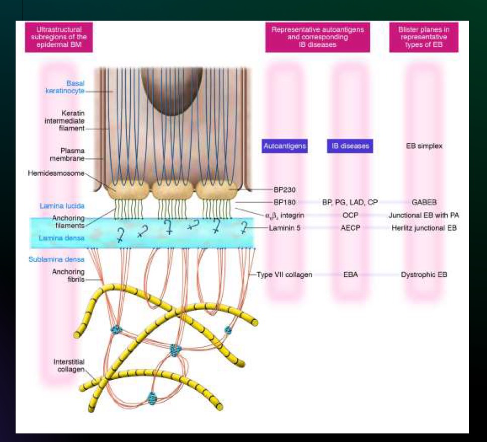
Allergic contact cheilitis: scaling and crusting of the vermilion border, often from cosmetic, dental, or food-derived allergens. Source: Jeong JY (2024) Contact cheilitis. In: Dermatology diaries.
TIER 1
Transient Lingual Papillitis (TLP — "Lie Bumps")
✅ BENIGN + SELF-LIMITED — painful erythematous/whitish papules on fungiform papillae of tip/dorsolateral tongue. Resolves spontaneously in 2–15 days (mean ~7 days).
First-line management = REASSURANCE. Patients are not dying, it is not cancer. Symptomatic relief is secondary.
First-line management = reassurance. TLP is self-limited in 2–15 days.
Transient lingual papillitis ("lie bumps"): painful erythematous or whitish papules on the fungiform papillae of the tip and dorsolateral tongue. Self-limited in 2–15 days.
Epithelial Attachment Apparatus — Structural Anchor for ALL Part-2 Diseases
The anatomic level of cleavage determines the disease identity. Reference this diagram for every condition below.
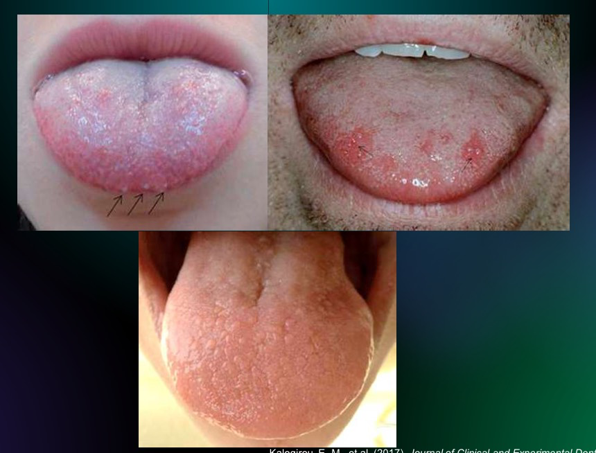
Epithelial attachment apparatus — the structural anchor for understanding all immunobullous diseases. Pemphigus targets desmosomes (intra-epithelial blister), pemphigoid targets the BMZ/hemidesmosome (sub-epithelial blister), EBA targets type VII collagen anchoring fibrils. Source: Yancey KB (2005).
Disease
Target
Level
Blister Type
Pemphigus Vulgaris
Desmoglein (desmosome)
INTRAEPITHELIAL (above BMZ)
Flaccid, ruptures immediately
MMP / Pemphigoid
BMZ proteins (BP180, BP230, laminin 332)
SUBEPITHELIAL (at BMZ)
Tense, intact bullae
EBA
Type VII collagen (anchoring fibrils)
BELOW BMZ
Deep sub-lamina densa
OLP
T-cell auto-inflammatory
BMZ basal layer
No true blistering; erosions
TIER 1
Oral Lichen Planus (OLP)
OLP is a chronic T-cell mediated AUTO-INFLAMMATORY disorder — NOT autoimmune. This distinction matters for patient counseling: patients with "autoimmune" diagnoses often become alarmed about life-altering systemic implications that do not apply here.
OLP = auto-inflammatory, NOT autoimmune. Use "auto-inflammatory" on this exam.
Prof's Position on Malignant Potential (Category G — likely exam target): Standard teaching (Neville) classifies OLP as an oral potentially malignant disorder (OPMD). Prof's updated position: OLP may NOT be a true OPMD. Cancers attributed to OLP transformation were likely dysplasia that was misdiagnosed as OLP from the start. Reference: Wu (2019), Head and Neck Pathology (Harvard).
On this professor's exam: "OLP is OPMD" = nuanced/controversial answer, not a clear yes.
📍 PATHOGNOMONIC LOCATION: Bilateral posterior buccal mucosa + ventral tongue with Wickham striae
Bilateral = reassuring for OLP. Unilateral or atypical site = BIOPSY NOW.
Bilateral = reassuring for OLP. Unilateral or atypical → BIOPSY.
📖 Wickham Striae = the lacy white reticulations of OLP. These white lacy lines define the reticular form and are the clinical/histopathologic signature finding of OLP.
🧠 4 P's of Cutaneous Lichen Planus
Purple
Polygonal
Pruritic
Papules
Location: flexor surfaces — wrists and ankles. 50% of cutaneous LP patients have oral lesions. Examine wrists and ankles in the dental chair to confirm OLP diagnosis.
Check wrists + ankles in the dental chair — cutaneous LP (4 P's) confirms OLP diagnosis.
Cutaneous lichen planus — the 4 P's: Purple, Polygonal, Pruritic, Papules on flexor surfaces (top left: forearm; bottom left: arm with post-inflammatory hyperpigmentation). Top right (a): Erosive OLP on buccal mucosa with peripheral white striae — oral confirmation of the same disease. Histology (bottom right, b): band-like ("lichenoid") lymphocytic infiltrate at the basement membrane with basal cell vacuolization and saw-tooth rete ridges — pathognomonic pattern.
Reticular vs Erosive OLP
Feature
Reticular (most common)
Erosive
Appearance
Bilateral symmetric lacy white lines (Wickham striae)
Atrophic areas ± ulceration; may present as desquamative gingivitis
Symptoms
Asymptomatic, waxes and wanes
Painful
Treatment
No treatment needed — annual monitoring
Clobetasol 0.05% BID-TID + dexamethasone soak QID
Follow-up
Annual
Every 3–6 months
⚠️ DIAGNOSTIC PITFALL: Dysplasia Can Mimic OLP
Favors TRUE OLP
Favors DYSPLASIA
Bilateral/symmetric
Unilateral or asymmetric
Posterior buccal/ventral tongue
High-risk sites (tongue, FOM, soft palate)
Waxes and wanes
Progressive, non-resolving
No atypia on biopsy
Dysplastic features on biopsy
Rule: Unilateral + high-risk site + progressive = BIOPSY NOW.
🚫 NEVER apply topical corticosteroids to the vermilion lip — irreversible fat pad atrophy (dimpling).
Use tacrolimus 0.1% ointment on the vermilion instead. Oral mucosa = OK for topical steroids.
Never apply topical corticosteroids to the vermilion lip — permanent fat pad atrophy. Use tacrolimus 0.1% on the lip. Clobetasol + dexamethasone = the two memorize drugs for erosive OLP.
Drug
Dose/Route
Notes
Clobetasol 0.05% gel
BID-TID
⭐ MEMORIZE
Dexamethasone 0.5 mg/5 mL soak
5 min, up to QID
⭐ MEMORIZE — universal oral medicine Rx
Fluocinonide 0.05% gel
BID-TID
Pre-numb first; off-label
Tacrolimus 0.1% ointment
BID on vermilion
Vermilion ONLY — not for intraoral mucosa
⚠️ Monitor for iatrogenic candidiasis with prolonged steroid use. If candidiasis risk: combine dexamethasone solution with nystatin solution in equal parts.
MMP attacks BMZ proteins (BP180, BP230, type VII collagen, laminin 332) producing sub-epithelial blisters. Ocular involvement in 61–70% of patients — early conjunctival scarring is irreversible and can cause blindness. Refer ALL MMP patients to ophthalmology, even asymptomatic.
🧠 Hades Mnemonic — pemphigoiD lives DEEP
"Hades lives deep in the underworld. PemphigoiD has a D — think DEEP. The cleavage is at the basement membrane zone, down below the epithelium."
PemphigoiD
= DEEP (BMZ)
Like Hades — deep underground
PemphiGus
= HIGH UP (intraepithelial)
Like Pegasus — soaring above
MMP = Autoimmune SUBEPITHELIAL Blistering Disease
Autoantibodies target BMZ proteins: BP180 · BP230 · type VII collagen · laminin 332
🦷 Most Common Oral Presentation = DESQUAMATIVE GINGIVITIS
Oral cavity involved in ~85% of MMP. Erythematous, eroded, peeling gingiva.
👁️ REFER ALL MMP → OPHTHALMOLOGY — EVEN IF ASYMPTOMATIC
Ocular involvement: 61–70% of patients. Early symptoms: burning · dryness · foreign body sensation.
Conjunctival scarring (symblepharon) = IRREVERSIBLE → BLINDNESS if missed.
🧠 Pemphigoid has two i's in the word → "two eyes." This disease involves the eyes.
ALL MMP → ophthalmology, even asymptomatic. 60–70% have ocular involvement; scarring is irreversible.
Anti-Laminin 332 (+) → ORDER CANCER SCREEN IMMEDIATELY
If DIF is positive, send serology for anti-laminin 332. 25% of anti-laminin 332-positive patients ALREADY have an occult adenocarcinoma. This is a life-saving diagnostic step.
Anti-laminin 332 (+) = cancer screen NOW. 25% already have occult adenocarcinoma.
Nikolsky Sign = NEGATIVE in MMP — subepithelial blister is tense; harder to elicit. Contrast with PV (positive).
⚠️ TRAP (F15): Putting all tissue in formalin = destroys DIF = cannot diagnose. Two vials required.
MMP DIF Pattern: Linear IgG, IgA, and/or C3 at basement membrane zone.
Contrast: PV = "chicken wire" intercellular pattern. Same antibodies — different LOCATION.
Boards love DIF location: linear at BMZ = MMP; intercellular “chicken wire” = PV.
🍣 "Don't Lose Your Sushi" — MMP epithelium is extremely fragile and detaches easily. Warn assistant: NO close suctioning near biopsy site. Epithelium will flap off into the suction.
Management
Risk
Sites
Treatment
Low risk
Oral ± skin
Clobetasol 0.05% gel BID-TID + Dexamethasone 0.5 mg/5 mL soak QID ⭐ MEMORIZE THESE
High risk
Any other mucosal site (ocular, nasal, laryngeal, esophageal, genital)
Systemic therapy — refer to oral medicine/derm/ophthalmology team
Tier 3 — MMP Epidemiology & Site Distribution
Incidence ~2/million/year; mean age 60–65; slight female predominance.
Nasal involvement: 20–40%. Laryngeal: 5–10%.
IIF (indirect immunofluorescence on blood) available but less accurate than DIF — skip; DIF is primary.
TIER 1
Pemphigus Vulgaris (PV)
🦷 >50% PRESENT WITH ORAL LESIONS FIRST — oral lesions precede skin involvement by months to over a year. You may be the FIRST clinician to see this potentially fatal disease. Early diagnosis = lives saved.
"Oral lesions first to show, last to go." Dentist often first clinician to see PV.
Nikolsky Sign = POSITIVE in PV — intraepithelial cleavage; lateral pressure on normal mucosa creates blister easily.
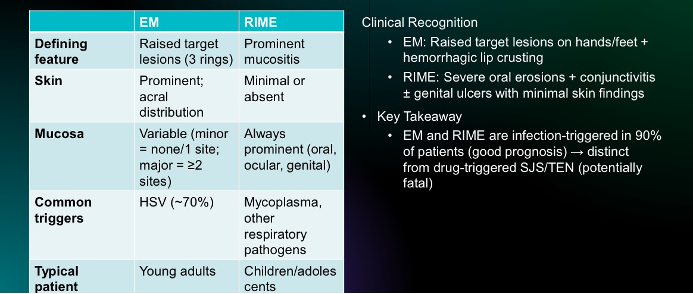
Mnemonic: "Pegasus (sounds like Pemphigus) flies THROUGH the clouds" — the keratinocytes are the clouds; acantholysis (cells falling apart from desmoglein destruction) creates the spaces Pegasus flies through. DIF pattern: intercellular IgG/C3 deposition in a "chicken wire" / fishnet netting pattern between keratinocytes throughout the spinous layer — pathognomonic for PV. Pemphigus = intra-epithelial (UP HIGH, like Pegasus); PemphigoiD = sub-epithelial ("lives DEEP like Hades").
🧠 Pegasus Mnemonic:
"PemPHIGus sounds like Pegasus. Pegasus FLIES BETWEEN THE CLOUDS. The cells are the clouds. Acantholysis = cells falling apart = space between clouds. Cleavage is INTRAEPITHELIAL (suprabasal) — UP HIGH like Pegasus."
DSG compensation explains why PV often presents with ORAL lesions FIRST: mucosa expresses mostly DSG3, so anti-DSG3 antibodies hit mucosa unopposed. Skin expresses both DSG1 + DSG3, so DSG1 compensates and delays skin involvement. Source: Stanley JR, Amagai M (2006) NEJM 355:1800–1810.
DSG Antibody–Phenotype Table
Antibodies Present
Phenotype
Why
Anti-DSG3 only
Mucosal-dominant PV — oral only
DSG1 compensates in skin; DSG3 present in oral mucosa → hits mucosa unopposed
Anti-DSG3 + Anti-DSG1
Mucocutaneous PV — oral + skin
Both targets attacked
Anti-DSG1 only
Pemphigus foliaceus — skin only, NO oral
DSG3 compensates in mucosa; skin lacks this compensation
PV oral lesions (7-panel): ragged erosions from flaccid bullae at palate, labial/gingival mucosa, tongue, FOM, buccal mucosa. Nikolsky+. PV = ALL surfaces (keratinized AND nonkeratinized), unlike RAS. (Gilligan 2025)
🔬 BIOPSY BEFORE ANY TREATMENT — CRITICAL RULE
Topical steroids suppress the autoantibodies needed for DIF diagnosis. Starting treatment first will obscure results.
Take PERILESIONAL biopsy (2 specimens: formalin H&E + Michel's DIF)
Begin topical steroids on non-biopsy areas immediately
Wait 5–7 days before applying steroids to the biopsy site (delayed healing)
Biopsy BEFORE treatment — faster diagnosis = better outcome.
PV DIF Pattern: "Chicken wire" intercellular IgG/C3 deposition between keratinocytes throughout the spinous layer — pathognomonic for PV.
Severity Classification
PDAI Score
Severity
Management
<15
Mild
Topical corticosteroids only (clobetasol + dexamethasone)
EM/RIME and SJS/TEN are SEPARATE DISEASES — NOT a spectrum.
Old teaching (EM → SJS → TEN = severity continuum) = WRONG per this professor.
Different causes → different prognoses → different management. RIME is the preferred modern term.
EM/RIME and SJS/TEN are NOT a spectrum — old teaching. On this exam: separate diseases, different etiologies.
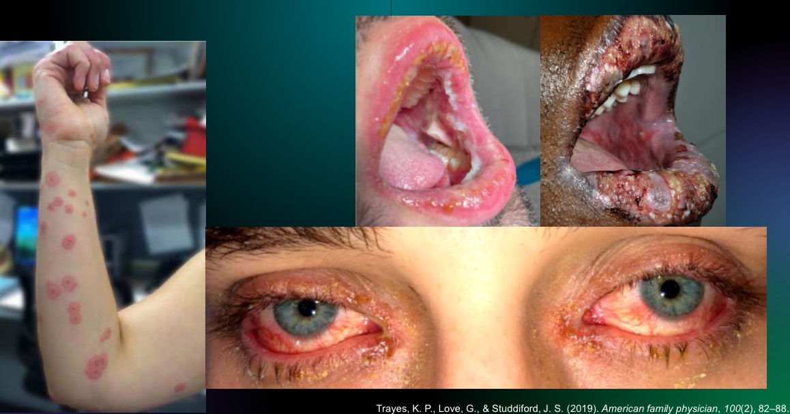
EM vs RIME (modern classification). EM = skin-dominant, target lesions, HSV-driven, young adults. RIME = mucosa-dominant (oral + ocular ± genital), Mycoplasma-driven, kids/adolescents. Both 90% infection-triggered — distinct from drug-triggered SJS/TEN (potentially fatal).
THE 90% RULE — Core Distinguisher
✅ INFECTION (90%) → EM/RIME → good prognosis, self-limiting
🚨 DRUG (90%) → SJS/TEN → potentially FATAL
Infection trigger (90%) = EM/RIME = good prognosis. Drug trigger (90%) = SJS/TEN = potentially fatal. This distinction governs everything.
EM vs RIME: 5-Row Comparison
Feature
EM
RIME
Defining feature
Raised 3-ring "iris" target lesions
Prominent mucositis (oral dominant)
Skin
Prominent, acral distribution
Minimal or absent
Mucosa
Variable (minor=none/1 site; major=≥2 sites)
Always prominent — oral + ocular + genital
Trigger
HSV ~70%
Mycoplasma + other respiratory pathogens
Typical patient
Young adults
Children/adolescents
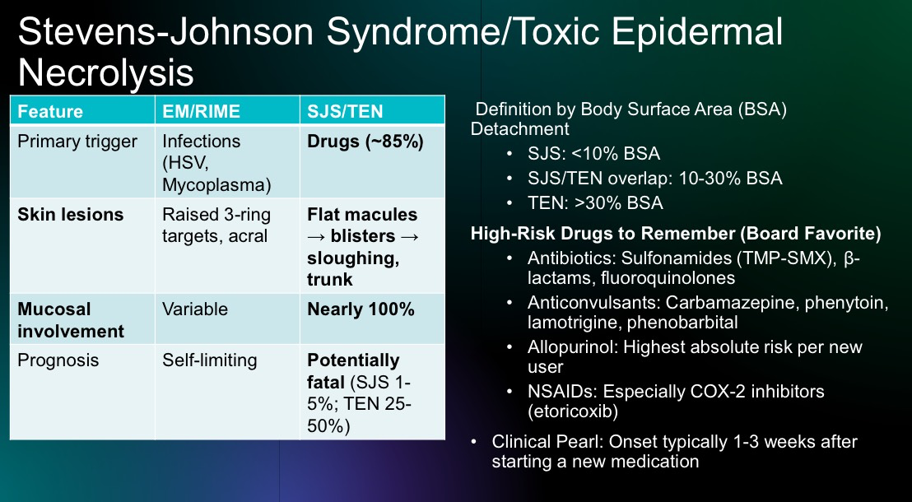
EM/RIME clinical recognition. Target lesions on hands/feet + hemorrhagic lip crusting (EM) vs. severe oral erosions + conjunctivitis ± genital ulcers with minimal skin (RIME). Source: Trayes KP, Love G, Studdiford JS (2019) Am Fam Physician 100(2):82–88.
Management & Supportive Care
Lidocaine 2% gel before meals for oral pain
Magic mouthwash q4h
Dexamethasone 0.5 mg/5 mL soak
Sucralfate suspension
⚠️ CHILDREN: topical lidocaine → seizures. Use benzocaine or diphenhydramine instead.
Children: topical lidocaine → seizures (absorbed through inflamed mucosa). Use benzocaine instead.
Recurrent EM Prophylaxis (HSV-triggered): Valacyclovir 500 mg BID for ≥6 months, then taper. Most effective prevention for recurrent episodes.
🚨 EMERGENCY — POTENTIALLY FATAL. Drug-triggered in ~85–90% of cases.
SJS/TEN is drug-triggered in ~85% (vs. EM/RIME infection-triggered in ~90%). BSA cutoffs: SJS <10%, overlap 10–30%, TEN >30%. High-risk drugs to memorize for boards: sulfonamides, anticonvulsants (carbamazepine, phenytoin, lamotrigine), allopurinol, COX-2 NSAIDs. Onset 1–3 weeks after starting a new med.
BSA Classification
Condition
BSA Skin Detachment
Mortality
SJS
<10% BSA
1–5%
SJS/TEN Overlap
10–30% BSA
—
TEN
>30% BSA
25–50%
High-Risk Drugs — BOARDS FAVORITE
💊 #1 DRUG TO MEMORIZE: ALLOPURINOL — highest absolute risk per new user of ANY drug for SJS/TEN.
If you remember one drug: allopurinol = #1 highest absolute SJS/TEN risk per new user.
Allopurinol — #1 (HIGHEST ABSOLUTE RISK PER NEW USER)
Carbamazepine + Han Chinese Patients = HLA-B*1502 Screening Required
Dentists prescribe carbamazepine for trigeminal neuralgia. Han Chinese patients carry HLA-B*1502 allele at dramatically elevated rates → greatly increased SJS risk from carbamazepine. MUST screen before prescribing.
Dentists prescribe carbamazepine for trigeminal neuralgia → must screen Han Chinese patients for HLA-B*1502 before prescribing.
SCORTEN Mortality Score
SCORTEN ≥5 = ~90% mortality. 0–1 = ~3% mortality. Use it to triage.
SCORTEN Factors (1 point each)
Score
Mortality
Age ≥40
HR >120 bpm
0–1 2 3 4 ≥5
3% 12% 35% 58% 90%
Malignancy present
BSA detachment >10%
BUN >28 mg/dL
Glucose >252 mg/dL
Bicarbonate <20 mEq/L
DENTIST'S ROLE — 4 STEPS:
RECOGNIZE: New drug + flu-like prodrome + oral erosions + skin macules → suspect SJS/TEN
STOP THE SUSPECTED DRUG IMMEDIATELY
Refer to ED / burn unit urgently (Call 911 if severe)
Document ALL current medications and start dates
Dentist's action: recognize + STOP THE DRUG + refer to ED.
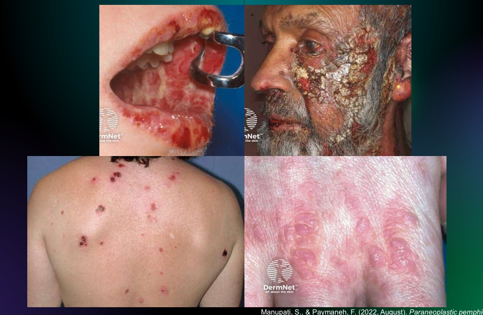
SJS/TEN assessment: (left) Wallace Rule of Nines for BSA classification; palm = 1% TBSA. (right) SJS: perioral hemorrhagic crusting (large), severe lip crusting (A), erosive intraoral mucositis (B). Stop the drug. Burn unit. 50% develop permanent ocular sequelae. (Trayes 2019)
SJS/TEN Onset Timeline: Symptoms typically begin 1–3 weeks after starting a new medication. Always take a medication history.
Tier 3 — SJS/TEN Oral Supportive Care & Dentist's Inpatient Role
Boards-tested. Know the key facts even if you rarely see it in practice.
🔴 ALWAYS ASSOCIATED WITH UNDERLYING NEOPLASM (known or occult)
Trigger full cancer workup in any patient with PNP/PAMS pattern.
🦷 ORAL LESIONS FIRST in ~45% of patients — often precedes cancer diagnosis. The dentist may be the first to catch an occult malignancy.
💀 MORTALITY 60–90% — most deaths within first year
Associated Malignancies — BOARDS FAVORITE
Malignancy
Frequency
Non-Hodgkin Lymphoma (NHL)
~40% (#1)
Chronic Lymphocytic Leukemia (CLL)
~20%
Castleman Disease
~18% (best prognosis — surgically removable)
🫁 Bronchiolitis Obliterans = Major Cause of Death — autoantibodies attack respiratory epithelium → progressive, often irreversible airway destruction.
Oral Lesions: SEVERE, PAINFUL, INTRACTABLE STOMATITIS — does not respond to standard therapy.
If stomatitis is treatment-resistant → think PNP/PAMS → cancer workup.
Tier 3 — PNP Phenotypes, Diagnostics & Supportive Care
Five mucocutaneous phenotypes: Pemphigus-like, Pemphigoid-like, EM-like, GVHD-like, LP-like.
Supportive oral care: dexamethasone 0.5 mg/5 mL + clobetasol 0.05% gel + magic mouthwash + lidocaine 2% gel before meals + CHX 0.12% + lanolin/petroleum jelly for hemorrhagic crusting + nutritional evaluation.
Cross-Cutting Concept Tables — Exam Favorites
Nikolsky Sign — PV Positive vs MMP Negative
Feature
Pemphigus Vulgaris (PV)
Mucous Membrane Pemphigoid (MMP)
Nikolsky Sign
✅ POSITIVE
❌ NEGATIVE
Why
Intraepithelial — cells fall apart easily with lateral pressure
Subepithelial — tense blister; epithelium covers blister; harder to elicit
Blister type
FLACCID — ruptures immediately on formation
TENSE — intact, dome-shaped bullae
Cleavage level
INTRAEPITHELIAL (suprabasal, above BMZ)
SUBEPITHELIAL (at BMZ)
Mnemonic
Pegasus flies HIGH ABOVE (between clouds)
Hades lives DEEP below (pemphigoiD)
DIF Pattern Table
Disease
DIF Pattern
Location
Antibodies
Pemphigus Vulgaris
"Chicken wire" / fishnet / intercellular netting
Between keratinocytes in spinous layer (intraepithelial)
IgG, C3
MMP
Linear at basement membrane zone
Subepithelial (at BMZ)
IgG, IgA, C3
OLP
Negative / fibrinogen deposits
BMZ basal zone
No immunoglobulin deposition
BSA Cutoffs — EM / SJS / TEN
Condition
BSA Skin Detachment
Trigger
Prognosis
EM / RIME
N/A (no skin detachment)
Infection 90%
Self-limiting, good
SJS
<10%
Drug 85–90%
Mortality 1–5%
SJS/TEN Overlap
10–30%
Drug 85–90%
—
TEN
>30%
Drug 85–90%
Mortality 25–50%
Histologic Level of Separation
Disease
Level
What Separates
Blister Roof
PV
INTRAEPITHELIAL (suprabasal)
Desmoglein/desmosome destruction → acantholysis
Thin (flaccid)
MMP
SUBEPITHELIAL (BMZ)
Autoantibodies → BMZ proteins
Full epithelium (tense)
EBA
Sub-lamina densa (below BMZ)
Anti-type VII collagen
Full epithelium
OLP
Band-like lymphocytic infiltrate at BMZ
T-cell mediated basal cell vacuolization
No true blister
Flashcard Deck — 15 Must-Know Q&A Pairs
Click each card to reveal the answer. All T1 items from the handoff.
What is the most common oral ulcerative condition?
Recurrent aphthous stomatitis (RAS) — affects approximately 20% of the population.
What clinical feature of RAS earns "easy points" on the exam?
The erythematous halo surrounding the yellow-white fibrinopurulent membrane. If you see that red halo in a photo → put RAS on your differential.
New-onset RAS in a patient over 40 with no childhood ulcer history requires what?
Systemic workup — evaluate for HIV, celiac disease, IBD, hematologic malignancy. Always ask: "Did you have these as a child?" No = mandatory workup.
Which topical corticosteroid does the professor say "commit to memory" and "will torture you about"?
Dexamethasone elixir 0.5 mg/5 mL — soak 5 minutes (minimum 2 min), up to QID. The universal first-line oral medicine rinse. Every dentist can and should write this prescription.
Rank these three corticosteroids from most to least potent: triamcinolone paste, clobetasol, fluocinonide.
Clobetasol propionate 0.05% (Group 1 — super-high) > Fluocinonide 0.05% (Group 2 — high) > Triamcinolone acetonide 0.1% paste (Group 4 — medium/WEAKEST). Trap: "dental" in triamcinolone's name does NOT make it the best choice.
What are the 3 D's of geographic tongue?
Depapillation (loss of filiform papillae → smooth red patches) + Demarcated (clear circumferential serpiginous white border) + Dynamic (migrates/changes location over days–weeks).
What is the specific vocabulary word for geographic tongue's white serpentine border?
Serpiginous — from "serpent" (snake-shaped winding border). Prof had the entire class say this word aloud. Key exam vocabulary.
What are the three drug classes that cause gingival hyperplasia, and which drug is the most important?
Anticonvulsants (Phenytoin = #1 most important, ~50% of users) + Immunosuppressants (Cyclosporine, 25–70%) + Calcium Channel Blockers (Nifedipine/Amlodipine, 6–25%). Boards love this section.
What is the FIRST and MOST IMPORTANT intervention for drug-induced gingival hyperplasia?
Meticulous plaque control — before ANY pharmacologic or surgical treatment. Surgery without prior hygiene optimization = ~35% recurrence within 18 months.
What is the pathognomonic location of oral lichen planus?
Bilateral posterior buccal mucosa + ventral tongue with Wickham striae (the lacy white reticulations). Bilateral = reassuring for OLP. Unilateral or atypical = BIOPSY.
Is OLP autoimmune or auto-inflammatory per this professor?
AUTO-INFLAMMATORY (NOT autoimmune). Chronic T-cell mediated auto-inflammatory disorder. This distinction is important for patient counseling — autoimmune implies systemic life-altering disease that does not apply here. Prof's updated position.
Nikolsky sign: positive in which disease, negative in which disease?
MMP: what percentage have ocular involvement, and what is the referral rule?
60–70% have ocular involvement. Rule: Refer ALL MMP patients to ophthalmology — EVEN IF ASYMPTOMATIC. Early symptoms: burning, dryness, foreign body sensation. Conjunctival scarring (symblepharon) is irreversible → blindness.
EM/RIME is triggered by what 90% of the time? SJS/TEN by what 90% of the time?
EM/RIME = Infection 90% (HSV ~70% for EM; Mycoplasma for RIME) → good prognosis. SJS/TEN = Drug ~85–90% → potentially fatal. Single most important distinguishing principle of the section. Allopurinol = #1 drug to remember for SJS/TEN.
PNP/PAMS: what is ALWAYS present, and what are the two hallmark complications?
ALWAYS an underlying neoplasm (known or occult) — trigger cancer workup. Hallmarks: (1) Intractable stomatitis — severe oral lesions that do not respond to standard therapy. (2) Bronchiolitis obliterans — autoantibodies attack respiratory epithelium = major cause of death. NHL ~40% is the most common associated malignancy.
Drug Allergy Quick-Reference
🚨 SJS/TEN High-Risk Drugs
Allopurinol
⭐ #1 HIGHEST ABSOLUTE RISK per new user
Sulfonamides / TMP-SMX
Classic boards drug
Beta-lactams
—
Fluoroquinolones
—
Carbamazepine
⚠️ Screen Han Chinese for HLA-B*1502
Phenytoin
Also causes DRGH
Lamotrigine
—
Phenobarbital
—
COX-2 NSAIDs (etoricoxib)
Highest-risk NSAID
Onset: 1–3 weeks after starting the drug. Stop drug immediately if SJS suspected.
💊 DRGH-Causing Drugs
Drug
Class
Incidence
Phenytoin
Anticonvulsant
~50% (#1 MOST IMPORTANT)
Carbamazepine
Anticonvulsant
Lower risk
Cyclosporine
Immunosuppressant
25–70% (#1 immunosupp.)
Nifedipine
Calcium channel blocker
6–25% (highest CCB risk)
Amlodipine
Calcium channel blocker
6–25%
Verapamil
Calcium channel blocker
Lower risk than nifedipine
Onset: 1–3 months after starting. Starts at interdental papillae. Edentulous areas spared.
Switch to felodipine or ACE-I/ARB (coord. with prescriber)
Latex, Antibiotics, CHX
Type I hypersensitivity (IgE-mediated)
Latex-free protocol; substitute CHX → Betadine
Metals, acrylates, amalgam, flavorings
Type IV (delayed, 24–72h) → lichenoid, PCG, contact stomatitis/cheilitis
Remove causative material; patch test
Cinnamon / cinnamaldehyde
Plasma cell gingivitis (PCG)
Eliminate cinnamon-containing products
Part 3 of 5
Epithelial Pathoses & Squamous Cell Carcinoma
OPMDs, dysplasia management, HPV, AJCC TNM staging, melanoma — 69 slides + case studies + chemoprevention data · QA-verified
01
Opening Quiz Case
A 75-year-old male with swollen, bleeding gingiva — what’s the test-Q answer?
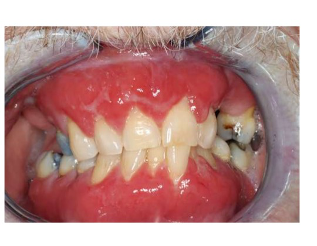
Slide 1 — 75-year-old male, 6-month history of swollen, bleeding gingiva. Clinical photo before DDx. The opening case prof opens the lecture with: what questions to ask, what tests to run, and where bilateral symmetry should re-direct your thinking.
75-year-old male · new patient visit
Chief complaint: Generalized swollen, painful, bleeding gingiva × 4 months. Difficulty eating. Sores on the inside of mouth and lips, bleed daily.
Med Hx: Hep B & C, hyperlipidemia, HTN, smoker, Type II DM (HbA1c 6.4 — controlled). Recent oncology workup negative.
Reassure the patient that this is age-related and will resolve
Answer: D — dexamethasone elixir, swish & spit BID. Bilateral white striae + erythema on attached gingiva, buccal, lateral tongue is the classic oral lichen planus (OLP) picture. First move is to suppress the immune-mediated inflammation with a topical steroid. Biopsy can come second if response is inadequate or if architectural dysplasia is suspected.
Trap: Smoker + bleeding gingiva makes you reach for a malignancy workup — but the bilateral & symmetric distribution + Wickham striae is the giveaway. Symmetric lesions on the gingiva almost never represent SCC.
02
Foundations & Epidemiology
The numbers prof opened with — oral cancer in the US in 2024
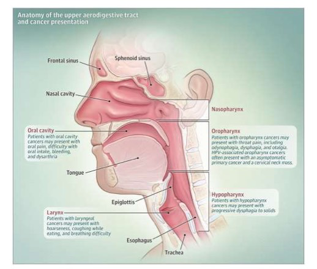
Slide 46 — Upper aerodigestive anatomy: oral cavity vs oropharynx (HPV+ tonsils/BOT) vs hypopharynx vs larynx. The anatomic distinction matters because the HPV prognosis benefit is oropharynx-specific — the same molecular phenotype confers worse outcomes when found in the oral cavity proper.
36,600new oral cavity cancers, US 2024
12,230deaths from oral cavity cancer, US 2024
>50%present with mets at diagnosis
41.7%of cases — oral tongue is #1 site
The prof’s anchor numbers: ~36,600 new oral cavity cancers per year in the US (2024 data). ~12,230 deaths/yr. Over half present with metastatic disease at diagnosis — this is the central tragedy of oral cancer epidemiology and the reason early detection drives all of this material. The oral tongue (lateral border) is the single most common site at 41.7%. Incidence is rising 1.8%/yr (women 2.3%/yr). Tongue cancers in younger patients are often not associated with traditional risk factors (tobacco/alcohol) — an unexplained epidemiologic shift.
Why tobacco + alcohol is multiplicative, not additive: alcohol acts as a solvent — it dehydrates oral mucosa and increases permeability, letting tobacco-derived nitrosamines penetrate deeper. Add the chronic mucosal irritation of acetaldehyde (alcohol’s first metabolite, itself a carcinogen) and you get synergy: 5× (tobacco) × 6× (alcohol) ~30× combined risk, not 11×.
Smokeless tobacco & betel quid: the carcinogen sits against the same patch of mucosa for hours. Risk localizes to wherever the quid is held — buccal mucosa, labial sulcus, gingiva. Areca nut (the active ingredient in betel) is itself a Group 1 carcinogen (IARC) and drives oral submucous fibrosis on top of carcinoma risk.
Fanconi anemia & inherited syndromes: Fanconi patients have defective FA/BRCA DNA-crosslink repair, so every smoke or drink does more permanent damage. They develop oral SCC decades earlier than the general population (often in their 20–30s) — and the prof emphasized this as the highest single per-patient OR (~40.6) on the deck. Dyskeratosis congenita is similar: short telomeres → rapid stem-cell exhaustion → SCC at young ages.
UV light is NOT a cause of intraoral SCC and NOT a cause of oral mucosal melanoma. UV drives lip vermilion SCC (basically skin) and cutaneous melanoma. The mucosa is shielded inside the mouth — the prof returns to this point twice in the deck.
03
HPV-Associated Benign Lesions
Four entities the prof side-by-sides: papilloma, condyloma, verruca, Heck
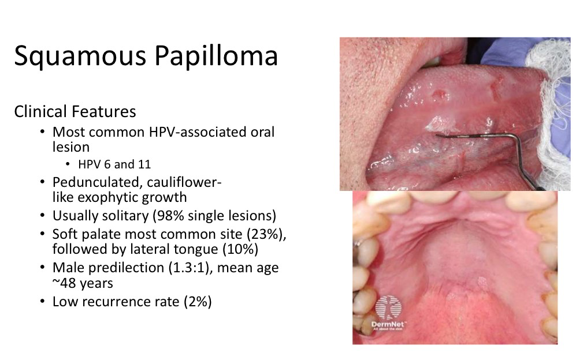
Slide 8 — Squamous papilloma (HPV 6/11). Most common HPV oral lesion. Pedunculated, solitary (~98%), cauliflower-like surface. Predilection: soft palate (~23%). Slight male predominance (1.3:1). ~2% recurrence after excision. Covered by Gardasil 9.
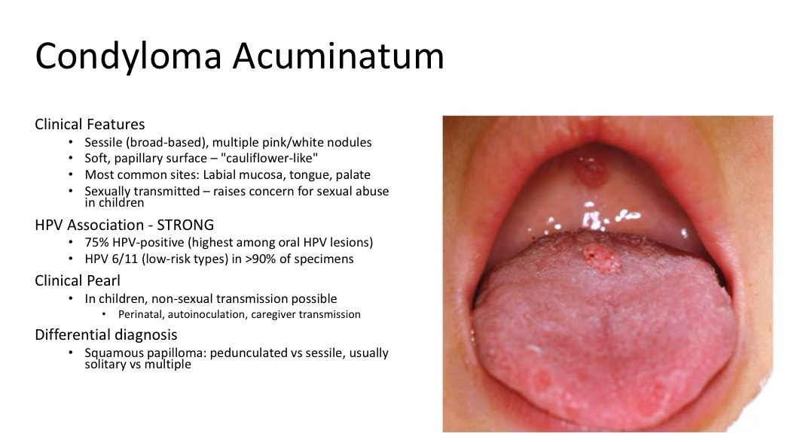
Slide 9 — Condyloma acuminatum. Sessile, multiple pink/white nodules. ~75% HPV-positive — the highest of all oral HPV lesions. HPV 6/11, sexually transmitted. In children, this finding requires evaluation for sexual abuse.
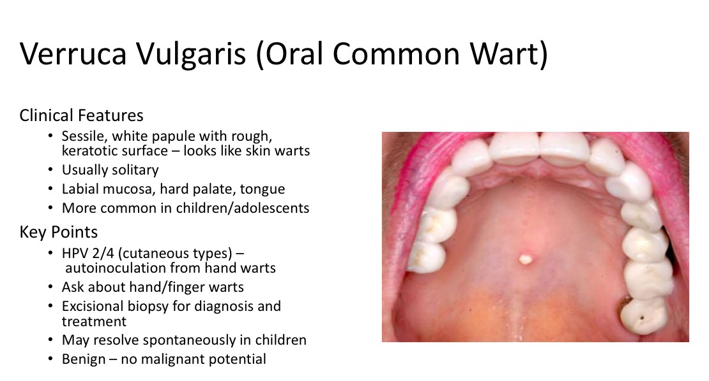
Slide 10 — Verruca vulgaris (oral common wart). Sessile white papule with a rough keratotic surface. HPV 2/4 by auto-inoculation from hand warts. NOT Gardasil 9 covered. Excisional biopsy; may resolve spontaneously in children.
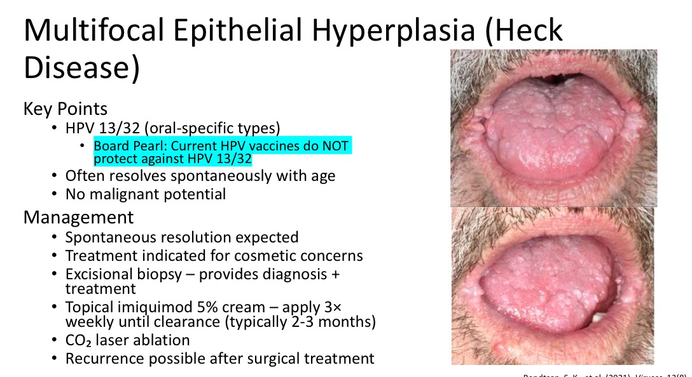
Slide 12 — Heck disease (focal epithelial hyperplasia). HPV 13/32. Board pearl: current HPV vaccines do NOT protect against HPV 13/32. Imiquimod 5% cream 3×/week × 2–3 months. Zero malignant potential.
The prof builds a single comparison table across slides 8–13. The only way to keep these straight on a written exam is to memorize HPV genotype + characteristic site + whether Gardasil 9 covers it. Heck disease (HPV 13/32) is the trap: it is NOT covered by current vaccines.
Lesion
HPV type(s)
Classic site
Appearance
Vaccine covered?
Squamous papilloma
HPV 6, 11
Soft palate, uvula, tongue; solitary 98%
Solitary, pedunculated, “cauliflower,” white-pink; male 1.3:1; mean age ~48; recurrence ~2%
HECK DISEASE IS NOT COVERED BY GARDASIL 9. HPV 13 and 32 are not in the 9-valent vaccine. If the prof asks “which of these benign HPV lesions cannot be prevented by current vaccination?” — the answer is focal epithelial hyperplasia (Heck disease). Verruca vulgaris (HPV 2/4) is also not covered, but Heck is the one the prof highlighted explicitly.
Papilloma vs condyloma — how to actually tell them apart: same HPV types (6/11), but papilloma is solitary, pedunculated, finger-like (cauliflower) and condyloma is multiple, sessile, broader, with blunted papillae. Condyloma is sexually transmitted; papilloma can arise from any prior HPV contact. Both are excised conservatively. In children, condyloma requires always considering sexual abuse in the differential, even though non-sexual transmission is possible.
Verruca: HPV 2, 4 → lip/perioral, auto-inoculation, NOT vaccine-covered
Heck: HPV 13, 32 → multifocal, flat, mucosa-colored, NOT vaccine-covered
04
Leukoplakia, Erythroplakia & PVL
The OPMD trio — definitions, transformation rates, who transforms when
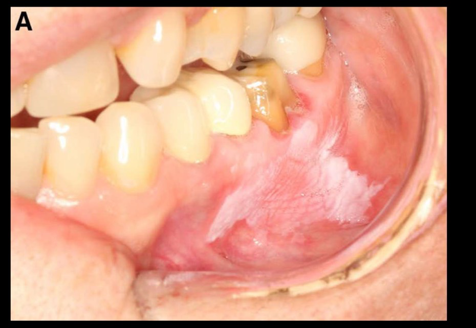
Slide 15 — Non-homogeneous leukoplakia, floor of mouth + buccal mucosa. Mixed white plaque with crisp knife-edge margins → biopsy required. Not traumatic keratosis (which would lack the fissuring and the demarcated edge).
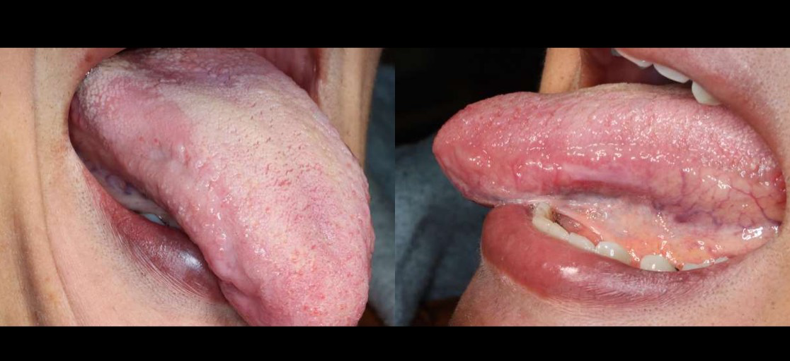
Slide 17 — Bilateral tongue leukoplakia. Fissures, folds, crisp knife-edge margins — visual signals of P53-driven dysplasia. Use as reference image when deciding which white tongue lesions need biopsy.
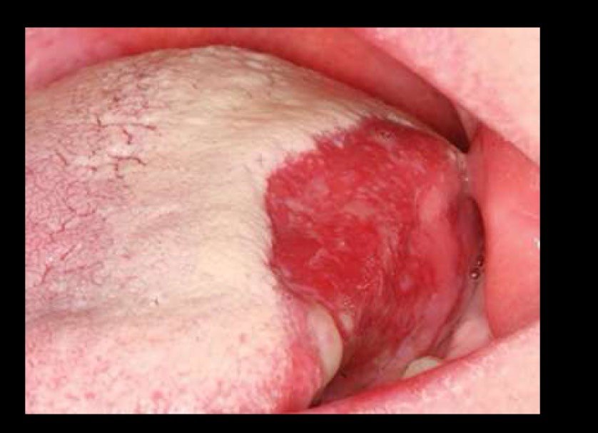
Slide 19 — Erythroplakia, lateral tongue. Soft, velvety, well-demarcated red lesion. ~75–90% are already severe dysplasia, CIS, or SCC at first biopsy. Median time to cancer: 3.7 months. Biopsy immediately.
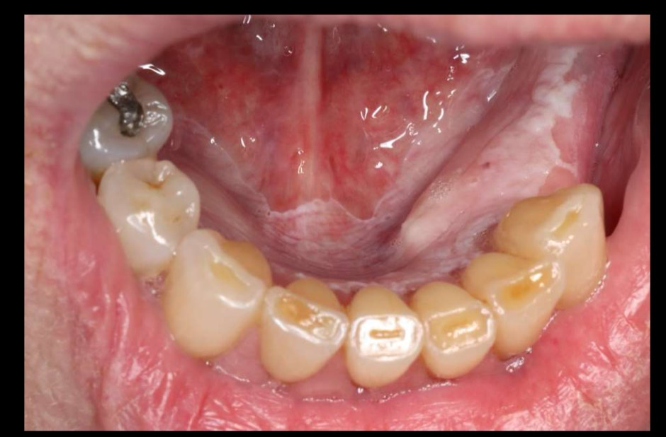
Slide 24 — Proliferative leukoplakia (PVL), floor of mouth. Extensive multifocal white plaque. ~48–50% malignant transformation rate. Female, non-smoker is the classic profile.
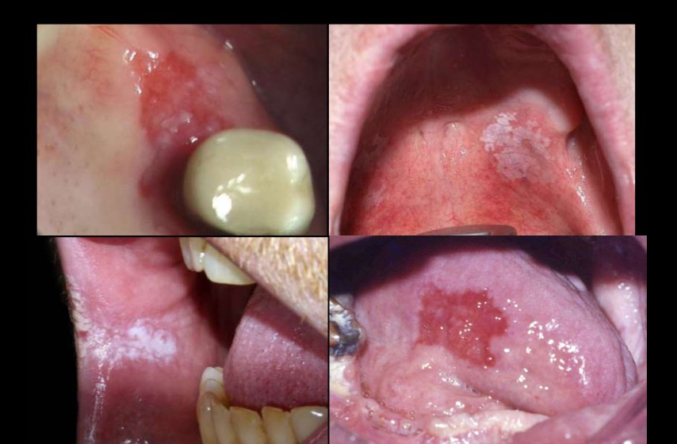
Slide 25 — Leukoplakia spectrum: homogeneous white → mixed erythroleukoplakia → exophytic. The red component is always the biopsy target.
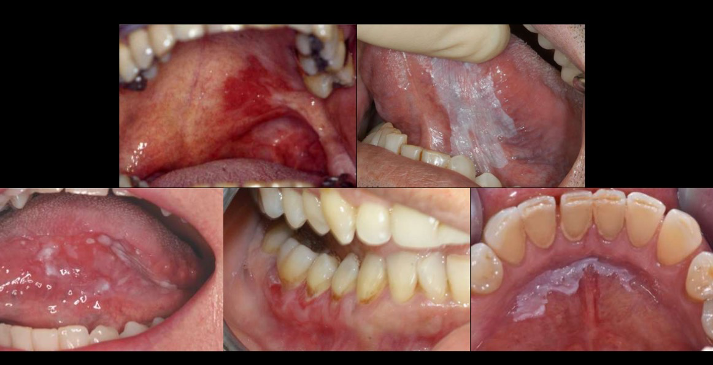
Slide 26 — PVL spectrum, including circumferential marginal gingival involvement (“ring around the collar”). Female, non-smoker, gingiva = the classic PVL profile (F:M ≈ 2:1).
Leukoplakia — the definition you’ll be tested on
A clinical term, not a histologic diagnosis — diagnosis of exclusion
WHO definition:“A predominantly white plaque of questionable risk having excluded (other) known diseases or disorders that carry no increased risk for cancer.”
Translation: “white patch I can’t wipe off, can’t blame on anything else.” It is a diagnosis of exclusion.
Must Rule Out First (diagnosis of exclusion):
Frictional keratosis
Candidiasis (can be scraped off)
Lichen planus
White sponge nevus
Other identifiable white lesions (leukoedema, hairy leukoplakia, etc.)
Requires biopsy for definitive diagnosis. Clinical judgment alone has low sensitivity (60%) and specificity (62%) for detecting cancer — you cannot reliably tell malignant from benign by eye alone.
“Leukoplakia is a clinical term, not a histologic diagnosis.” When you biopsy it, the path report comes back as hyperkeratosis, mild/moderate/severe dysplasia, carcinoma in situ, or invasive SCC. The clinical diagnosis “leukoplakia” tells you nothing about the tissue underneath until you cut it.
Leukoplakia — Natural History & 5-Year MT Rates by Grade
Both resolution and progression data — important exam numbers
Resolution (good news)
Mild dysplasia: 18–39% had spontaneous resolution
All dysplasias: 32.5% had reduction in size or resolution over 10-year follow-up
18.6% completely disappeared
12.7% reduced in size or clinical severity
Progression (the danger)
Overall transformation rate: 6.6–8.4%
Annual rate: ~2% per year
39.6% of cancers arose from leukoplakias WITHOUT dysplasia
5-Year Malignant Transformation Rate by Dysplasia Grade
Dysplasia Grade
5-Year MT Rate
Key Data
No dysplasia
2.2%
Yet 39.6% of oral cancers arose from non-dysplastic leukoplakias — never dismiss
Mild dysplasia
2.6–11.9%
38% progressed to malignancy in some series; 5-yr risk up to 11.9%
The 39.6% paradox: in one widely cited series, 39.6% of leukoplakias that progressed to SCC had only “hyperkeratosis without dysplasia” on the original biopsy. Read that twice. You cannot rule out malignant potential with a single benign-looking biopsy. → This is why prof emphasizes photo-documentation + re-biopsy if any clinical change — never “I biopsied it once, it was benign, we’re done.”
Erythroplakia — the dangerous one
Less common than leukoplakia, but vastly more sinister — median time to cancer 3.7 months
WHO definition:“A bright red velvety plaque that cannot be characterized clinically or pathologically as any other recognizable condition.”
Erythroplakia is much rarer than leukoplakia (~10× less common) but carries a ~50% malignant transformation rate, and ~75–90% already show severe dysplasia, CIS, or invasive SCC at the very first biopsy. These are two separate statistics: the 50% is the eventual MT rate; the 75–90% is how bad the histology is at presentation. Any persistent red patch > 2 weeks needs biopsy — do not wait.
Also a Diagnosis of Exclusion — Must Rule Out:
Atrophic glossitis
Median rhomboid glossitis
Plasma cell gingivitis
Erosive lichen planus
Malignant transformation rate: ~50% MT
~75–90% are already severe dysplasia, CIS, or invasive SCC at the first biopsy
Median time to cancer: 3.7 months → URGENT referral; do not watch and wait
Compare leukoplakia median time to cancer: 25 months
Why red > white as a danger sign: the red color comes from thinning of the epithelium (so capillaries show through) plus increased vascularity driving the proliferating dysplasia. Less keratin on top + more blood underneath = the visual signature of advanced cellular disorder. White plaques are usually thicker keratin layers — can be benign reactive keratosis. Red plaques almost never are.
Speckled / non-homogeneous leukoplakia (mixed red & white) carries the same risk as erythroplakia. If a leukoplakia has any red component, biopsy the red part — that’s where the dysplasia/SCC is most likely to be sampled.
Malignant transformation rates by OPMD — Severity Spectrum
OLP0.2–1.4%
OSF5.1%
Leukoplakia6.6–8.4%
PL / PVL48–50%
Erythroplakia~50% MT
OPMD
MT rate
Notable
Homogeneous leukoplakia
~3%
Smooth, uniform white
Non-homogeneous (speckled) leukoplakia
~15–25%
Mixed red/white — biopsy the red; 4.2–6.5× higher risk than homogeneous
Erythroplakia
~50% MT
~75–90% already severe dysplasia/CIS/SCC at first biopsy; median time to cancer 3.7 mo
Proliferative (Verrucous) Leukoplakia — PVL/PL
48–50% (some up to 100% over time)
Highest MT rate; 8× higher than conventional leukoplakia
Oral submucous fibrosis (OSF)
~5.1%
Median 36 mo to cancer
Oral lichen planus (OLP)
~1.4%
Controversial; risk highest in atrophic/erosive forms
Oral lichenoid lesion (OLL)
~1.4% (same as OLP)
Per the prof’s slide
Risk Factors for Malignant Transformation — Triage Grid
Clinical and pathologic features that predict progression from OPMD to OSCC
Non-Homogeneous Appearance
Mixed red/white lesions: 4.2–6.5× higher risk than homogeneous white
In mixed lesions: always biopsy the RED component — that’s where dysplasia lives
Dysplasia on Biopsy
Any dysplasia: 2.75× higher risk overall
No dysplasia: 2.2% (but 39.6% of cancers arise here)
Mild: 2.6–11.9%
Moderate: 4.1–8.7%
Severe: 29.2–32.2%
High-Risk Anatomic Sites
Lateral/ventral tongue and floor of mouth
Tongue leukoplakia: 12.7% transformation vs 6.6% overall
Floor of mouth: 2.1× higher risk
Size & Sex
Size >200 mm² (>2 cm): 2–4× higher risk
Female sex paradox: higher MT rate despite lower incidence
Non-smoking females with leukoplakia = particularly high risk
Combination of these factors is additive
The combination of risk factors is additive. A non-homogeneous (mixed red/white) leukoplakia on the lateral tongue in a non-smoking female with moderate dysplasia on biopsy represents an extremely high-risk lesion requiring aggressive management and close follow-up.
The OPMD with the worst prognosis — 8× higher MT than conventional leukoplakia
PVL has the highest malignant transformation rate of any OPMD: 48–50%, approaching 100% over time. Female > male (F:M = 2:1), often non-smokers (which is unusual for an OPMD). Multifocal, slowly spreading, white verrucous (warty) plaques that recur after every excision. Gingiva is the most common site; “ring around the collar” circumferential marginal gingival involvement is an ominous pattern.
Proposed Diagnostic Criteria
Major Criteria (must meet 1+):
Leukoplakia at ≥2 oral sites
Lesion enlargement or new lesions during follow-up
Recurrence after treatment
Minor Criteria:
Total size ≥3 cm (sum of all sites)
Female sex
Non-smoker
Disease course >5 years
Alternative Definition:
Multiple non-contiguous lesions OR single lesion >4 cm with documented progression
Malignant transformation: 48–50% (some series report 70–100% over lifetime)
Annual transformation rate: ~9.3%/yr (vs ~2%/yr for conventional leukoplakia)
8× higher transformation risk than conventional leukoplakia
F:M = 2:1; gingiva most common; “ring around the collar”
What “proliferative verrucous” actually means clinically: instead of a single discrete patch you can excise once and be done, PVL behaves like a field disease — lesions pop up next door, then across the arch, then on a new mucosal site, over years. Each new lesion can independently progress to verrucous carcinoma or conventional SCC. There is no curative treatment — only serial excision + lifelong surveillance. Etiology is unknown; HPV has been implicated in some series but is not the established cause.
Hyperkeratosis only: ~3% MT; severe dysplasia: >40% MT
5-yr MT by grade: no dysplasia 2.2% → mild 2.6–11.9% → mod 4.1–8.7% → severe 29.2–32.2%
39.6% of progressors had NO dysplasia on first biopsy
Erythroplakia: TWO stats → ~50% MT rate; ~75–90% already severe dysplasia/CIS/SCC at biopsy
Erythroplakia median time to cancer: 3.7 months; leukoplakia: 25 months
PVL: 48–50% MT, up to 100%; annual rate 9.3%; 8× higher than conventional
OSF: 5.1% MT, ~36 mo median to cancer
OLP / OLL: ~1.4% MT each
Clinical sensitivity 60%, specificity 62% for detecting cancer → always biopsy
05
Biopsy Technique & Site Selection
Where to biopsy, when to excise, the seeding myth — with quantitative evidence
Slide 30 — ALA-PDT sequence. 20% ALA gel applied 2 hours before light. ALA → protoporphyrin IX (selectively in dysplastic cells) → laser → reactive oxygen species → ablation. 66–100% complete response. 8.3% malignant transformation at 3 years.
When to Biopsy
All leukoplakias should be biopsied — clinical judgment alone has sensitivity 60%, specificity 62% for detecting cancer
Erythroplakia — biopsy or excise immediately; 75–90% are carcinoma, CIS, or severe dysplasia
Persistent lesions (>2–3 weeks) that don’t resolve after removing irritants
Any lesion with clinical change (color, texture, size, symptoms)
Site selection rules
From the prof’s biopsy slides
If there is a red component: biopsy the red. Mixed red/white lesions — the dysplasia/SCC is in the red.
Sample the thickest, most indurated, or most ulcerated zone if the lesion is non-homogeneous.
Avoid the necrotic center of an ulcer — you’ll get acellular slough. Sample the edge of the ulcer where viable epithelium meets ulcerated tissue.
Use multiple incisional biopsies if the lesion is large or non-homogeneous — one site may miss the worst dysplasia.
Mark orientation for the pathologist (suture tag or ink) when margin assessment matters.
Why “biopsy the red component”: the red zone is where epithelium has thinned (capillaries show through), keratin protection has dropped, and the dysplastic cells are proliferating fastest. White zones may be reactive keratosis sitting over normal epithelium — a misleading “benign” sample. The red is where the disease lives.
Tumor Seeding — the myth, and the numbers
Tumor seeding from biopsy is a myth. Older teaching held that incisional biopsy “seeded” SCC into deeper tissue and worsened prognosis. This is not supported by current evidence.
Quantitative seeding data: incidence of tumor seeding is approximately ~0.00012% for FNA biopsy and ~0.0011% for core biopsy. A population-based registry study showed no association between incisional biopsy and 5-year survival or recurrence in Stage I/II OSCC. Outcomes are equivalent whether the cancer is incisionally biopsied first or excised primarily. Do not withhold biopsy out of fear of seeding.
Special case — verrucous lesions: verrucous carcinoma’s diagnosis depends on seeing the deep pushing border (not infiltrative). A superficial biopsy that captures only the warty surface architecture will look like benign hyperkeratosis or “verrucous hyperplasia.” Biopsy must extend to the deep submucosa to see the broad pushing front.
Mnemonic for biopsy site selection: “Red over white, edge over center, deep for verrucous, multiple for big.”
06
Management of Dysplasias
Scalpel vs CO2 vs diode vs cryo vs ALA-PDT — with quantitative evidence data
Surgical / Ablative Approaches — Evidence Table
Method
Key Evidence
Notes
Scalpel Excision
Gold standard; allows margin assessment
Positive margins ↑ recurrence (OR 3.6); aim 5 mm peripheral, ≥2 mm deep
CO2 Laser Ablation
HR 0.14 for MT vs. observation; 52.6% recurrence rate reported
≥3 mm margins reduces recurrence; thermal artifact can limit pathology read
Diode Laser
93.5% complete response; 6.5% recurrence at 39 months
Combination excision + vaporization = lowest recurrence; more thermal artifact than CO2
Cryotherapy
100% complete regression; mean 3.1 treatments
Best for lesions <2 cm²; no specimen for histology; limited RCT data
Photodynamic Therapy (ALA-PDT)
66–100% complete response; 8.3% MT at 3 years
ALA-PDT effective for mild-moderate dysplasia; less effective for severe; tissue-preserving; good for multifocal/large field
Scalpel excision
Gold standard. Preserves margins for histology. Best for severe dysplasia / CIS / suspected SCC. OR 3.6 for recurrence if positive margins.
CO2 laser
Excellent hemostasis, good for vascular sites (FOM, tongue). HR 0.14 for MT vs observation. 52.6% recurrence. Use ≥3 mm margins. Thermal artifact at margins can compromise pathology.
Diode laser
93.5% complete response, 6.5% recurrence at 39 mo. Combo excision + vaporization = lowest recurrence. More thermal artifact than CO2 — not recommended when histology critical.
Cryotherapy
100% complete regression; mean 3.1 treatments; lesions <2 cm². No specimen for histology. Reserved for select small benign-appearing lesions.
ALA-PDT
66–100% CR; 8.3% MT at 3 yr. Topical 5-aminolevulinic acid + visible light. Selectively destroys dysplastic cells. Tissue-preserving — ideal for multifocal/large field. Good for mild-moderate; less effective for severe.
Topical chemoprevention
Imiquimod 5% (TLR-7 agonist), retinoids, others — see chemoprevention section. Adjunctive, not curative for established dysplasia.
Treatment by dysplasia grade
Histology
First-line treatment
Follow-up
Hyperkeratosis (no dysplasia)
Photo-document, eliminate irritants, watch
Re-evaluate 3–6 mo; re-biopsy if change
Mild dysplasia
Excise OR close watch (3 mo)
Strict surveillance even if excised
Moderate dysplasia
Excise (scalpel preferred)
Q3-mo for 1 yr, then Q6-mo
Severe dysplasia / CIS
Excise with clear margins
Q3-mo lifelong — field cancerization risk
Multifocal / PVL / large field
Serial excisions ± ALA-PDT ± imiquimod
Lifelong surveillance, photo-document each visit
Dysplasia grading in plain English:
Mild: abnormal cells in the basal third of the epithelium only. Architecture mostly preserved.
Moderate: abnormal cells extending into the middle third. More mitoses, nuclear pleomorphism.
Severe: abnormal cells throughout the upper third as well. Loss of polarity, atypical mitoses, marked pleomorphism.
Carcinoma in situ (CIS): full-thickness atypia but the basement membrane is intact — no invasion yet.
Invasive SCC: tumor cells have broken through the basement membrane into lamina propria/submucosa.
The 2017 WHO update collapsed the 3-tier system into a 2-tier low-grade vs high-grade system in many institutions because reproducibility between mild and moderate is poor. Treat moderate the same as low end of high-grade.
Margins matter. When you excise dysplasia, aim for 5 mm peripheral and at least 2 mm deep clinical margin. A “positive” margin on path = re-excision or close surveillance (OR 3.6 for recurrence). Field cancerization means the entire exposed mucosa is at risk — clear margins on one lesion don’t protect the next centimeter over.
07
Two Real Patient Cases
The 56-year-old female and the 73-year-old male the prof showed — with full dated timelines
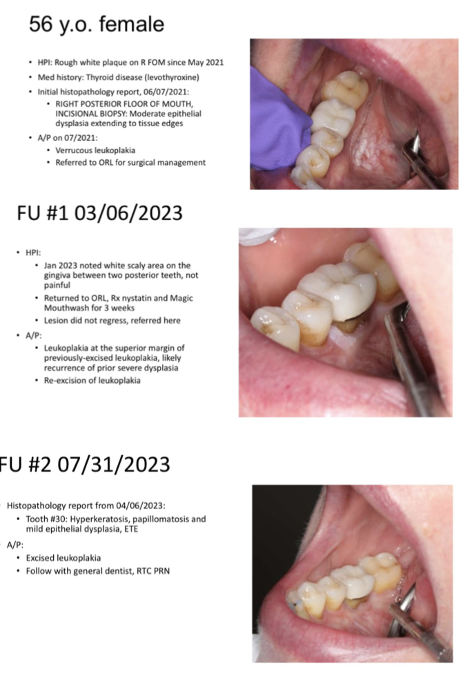
Slide 31 — Case 1, 56-year-old female. Rough white floor-of-mouth plaque since May 2021. Moderate dysplasia → wide local excision → recurrence → re-excision. Field cancerization + grade escalation across the timeline.
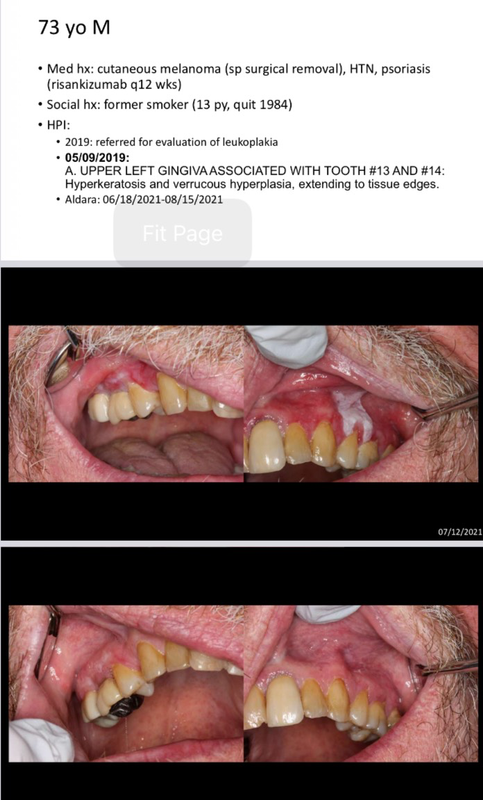
Slide 37 — Case 2, 73-year-old male. Cutaneous melanoma history + psoriasis (risankizumab) + 13 pack-year former smoker. Upper-left gingival hyperkeratosis + verrucous hyperplasia (May 2019). Field too extensive for surgery → imiquimod chemoprevention chosen.
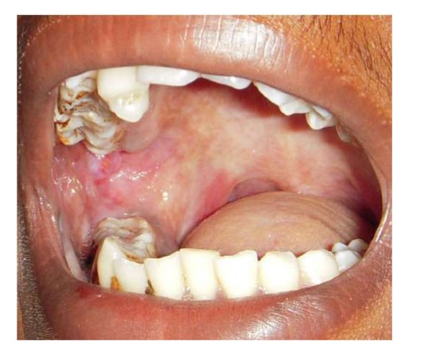
Slide 38 — Case 2 BEFORE imiquimod (July 2021). Upper-left gingival leukoplakia, field too large for surgery without major morbidity → topical chemoprevention chosen.
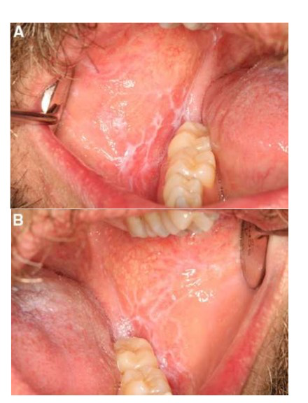
Slide 39 — Case 2 DURING imiquimod (September 2021). Erythema + erosion is the expected inflammatory response, not a complication. TLR-7 activation drives immune clearance of dysplastic keratinocytes.
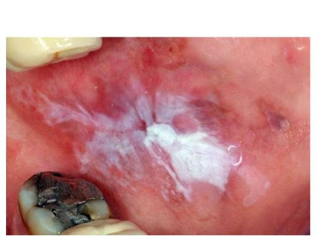
Slide 40 — Case 2, 3+ years post-imiquimod (November 2024). Durable response — gingiva near-normal. Prof: “You don’t have to get rid of the leukoplakia to have a win.” The goal is cancer prevention, not cosmetic clearance.
Case 1 · 56-year-old female · Recurrent Leukoplakia, R Floor of Mouth
2+ year follow-up — demonstrates escalating dysplasia and field cancerization
Patient Background
Age/Sex: 56-year-old female
Medical history: Thyroid disease (levothyroxine)
Chief complaint: Rough white plaque on right floor of mouth, May 2021
May 2021
Initial presentation: plaque on R FOM noted; painless, found on routine exam. Referred to ORL for management.
06/07/2021
Incisional biopsy: Right posterior floor of mouth — moderate epithelial dysplasia extending to tissue edges. A/P: verrucous leukoplakia; referred to ORL for surgical management.
09/21/2021
Wide local excision with Integra graft reconstruction. Final histopathology: keratosis with focal SEVERE DYSPLASIA; background of predominantly mild to moderate dysplasia. Evaluation of margins limited by cautery artifact; no definite high-grade dysplasia at margin. Mild dysplasia extends to anterior and right lateral margins.
03/06/2023
Recurrence: Jan 2023 noted white scaly area on gingiva between two posterior teeth, not painful. Returned to ORL; Rx nystatin and Magic Mouthwash × 3 weeks — lesion did not regress. A/P: leukoplakia at superior margin of prior excision, likely recurrence of prior severe dysplasia. Re-excision performed.
04/06/2023
Re-excision histopathology (tooth #30 area): hyperkeratosis, papillomatosis, and mild epithelial dysplasia, ETE. A/P: excised leukoplakia. Follow with general dentist, RTC PRN.
Key teaching points: (1) Incisional biopsy showed moderate dysplasia, but excision revealed focal severe dysplasia — incisional biopsies can underestimate the true grade. (2) Recurrence at the margin of the prior excision site is consistent with field cancerization. (3) Each recurrence needs fresh biopsy because grade can change. (4) Re-excision showed downgrade to mild dysplasia — sustained monitoring essential.
Why “deeper biopsy” was the path’s request: verrucous architecture (broad rete pegs pushing down) on a superficial sample alone is non-specific — can be benign hyperplasia, dysplasia, or verrucous carcinoma. The diagnosis depends on seeing whether the rete pegs push or infiltrate at the deep margin. Surface bite = no answer. Deep bite = diagnosis.
Case 2 · 73-year-old male · Gingival Leukoplakia treated with Aldara (Imiquimod 5%)
Proliferative leukoplakia on upper gingiva — non-surgical field management
Patient Background
Age/Sex: 73-year-old male
Medical history: Cutaneous melanoma (s/p surgical removal), hypertension, psoriasis (on risankizumab q12 wks)
Social history: Former smoker (13 pack-years, quit 1984)
Chief complaint: Multifocal white plaques on maxillary gingiva, referred for evaluation of leukoplakia, 2019
05/09/2019
Initial biopsy: Upper left gingiva associated with teeth #13 and #14 — hyperkeratosis and verrucous hyperplasia, extending to tissue edges.
06/18–08/15/2021
Aldara (imiquimod 5% cream) course applied to affected maxillary gingiva. Field too large for surgical excision without major morbidity (full-thickness graft, periodontal compromise).
07/12/2021
During Aldara treatment: significant inflammatory response with erythema and white plaque on maxillary gingiva bilaterally — expected (TLR7/8 agonist activation). Tapered to 2×/week.
Long-term follow-up (3+ years): gingiva appears relatively normal with minimal residual changes. Sustained clinical improvement documented.
This is the prof’s poster case for field-disease management when surgery isn’t feasible. Multifocal attached gingiva, multifocal palate — you can’t excise it all without disfiguring the patient. Topical chemoprevention (imiquimod) is the workaround. Long-term (3+ yr) follow-up shows sustained response, though continued monitoring is essential given PL’s high recurrence rate.
Why imiquimod for gingival leukoplakia: imiquimod is a TLR-7 agonist — it kicks the local innate immune system into high gear (interferons, NK cells, T-cell recruitment) at the application site. Dysplastic keratinocytes that look “abnormal-self” get cleared by the activated immune response. It’s borrowed from cutaneous use (genital warts, actinic keratosis, superficial BCC) and is off-label for oral mucosa. Causes a brisk local inflammation — warn patients that inflammation during weeks 2–4 is the drug working, not a sign to stop.
08
Chemoprevention
The agents under investigation — retinoids, natural compounds, emerging therapies with clinical trial data
Chemoprevention is the use of agents to halt or reverse the molecular progression from normal mucosa → OPMD → SCC. The prof’s slides cover ~23 agents grouped into retinoids/carotenoids/synthetics (Part 1) and natural compounds + the BWH/DFCI RP-2 program (Part 2). Most are still investigational; imiquimod and ALA-PDT have the most clinical traction in oral medicine right now.
Part 1 — Retinoids, Carotenoids & Topical Cytolytics
Off-label oral use; Phase I/II at USC; the prof’s Case 2 agent
5-ALA Photodynamic Therapy
Photosensitizer + visible light → ROS-mediated cell death
Selectively kills dysplastic cells; tissue-preserving; 66–100% CR; 8.3% MT at 3 yr
Diclofenac topical
NSAID — COX inhibition
Used in actinic cheilitis
Vitamin D3
Differentiation, immune modulation
Adjunctive; deficiency widely associated with cancer
Part 3 — Emerging Therapies & Clinical Trials
The cutting edge of non-surgical dysplasia management — BWH/DFCI pipeline
Category
Agent
Mechanism
Evidence
Status
Natural Compounds
Curcumin 3.6 g/day
NF-κB inhibition; antioxidant
RCT: 67.5% response vs. 55.3% placebo (p=0.03)
No histologic difference; oral bioavailability poor
Oncolytic Viruses
ONYX-015 (mouthwash)
p53-selective adenovirus
37% histologic resolution; mostly transient
Investigational
rAd-p53 / Gendicine (injection)
p53 gene transfer
Phase I: 72% clinical response; safe and feasible
China only; investigational
RP2 (intralesional injection)
Modified HSV-1 oncolytic virus
Phase II Clinical Trial at BWH/DFCI
Active ongoing trial
TLR9 Agonists
Vidutolimod (± ICB)
VLP activates pDCs via TLR9
↑ IFN-γ, IL-12, TNF-α; ↓ Ki-67 in lesions
Investigational
Emerging
APG-157 (zinflavonoid mixture)
Flavonoid multi-target
Phase IIa: some severe dysplasia → no dysplasia
Ongoing
Immune checkpoint inhibitors (PD-1/PD-L1)
PD-1/PD-L1 blockade
Being evaluated for dysplasia prevention
Investigational
Active Clinical Trials to Know: (1) RP2 (oncolytic modified HSV-1) at BWH/DFCI — Phase II, intralesional injection. (2) Imiquimod 5% at USC — Phase I/II. These represent the cutting edge of non-surgical dysplasia management and were specifically flagged by the prof.
Imiquimod mechanism in plain English: imiquimod binds toll-like receptor 7 (TLR-7) on local dendritic cells and macrophages. TLR-7 normally senses single-stranded viral RNA — binding it triggers a strong type-I interferon response (IFN-α/β), recruits CD8+ T cells, activates NK cells. Dysplastic keratinocytes that escape immune surveillance get re-recognized and destroyed. Side effect: aggressive local inflammation (redness, soreness, ulceration) for the first 2–4 weeks — that is the drug working.
ALA-PDT mechanism in plain English: 5-aminolevulinic acid is a precursor in the heme synthesis pathway. Apply it topically and dysplastic cells preferentially absorb & convert it into protoporphyrin IX (because their metabolism is dysregulated). Then shine red/blue visible light: protoporphyrin IX absorbs the photon, transfers energy to molecular oxygen, generates reactive oxygen species (singlet oxygen) that destroy the dysplastic cell from inside. Selectivity comes from differential ALA uptake/conversion.
Calcipotriene ± 5-FU = NCCN preferred for cutaneous field cancerization
09
Other OPMDs: OSF, OLP, OLL
Submucous fibrosis, lichen planus, lichenoid lesions — and how to tell them apart
Oral Submucous Fibrosis (OSF)
The areca-nut / betel-quid disease — 5.1% MT, 36 mo to cancer
OSF malignant transformation rate: ~5.1%. Median time from OSF onset to oral cancer: ~36 months. Cause is areca nut (the active ingredient in betel quid) — a Group 1 IARC carcinogen. Prevalent in South & Southeast Asian populations.
Clinical features
Burning sensation with spicy foods (early symptom)
Progressive blanching of mucosa → marble-like whitening
Palpable fibrous bands on buccal mucosa, soft palate, lips
Late: trismus (limited mouth opening) — from submucosal fibrosis around muscles of mastication
Tongue depapillation, atrophic mucosa
Condition is considered irreversible once established
OSF mechanism — how a chewed nut causes fibrosis & cancer: areca nut releases arecoline and copper-rich extracts that drive submucosal fibroblasts into a profibrotic phenotype. Fibroblasts upregulate collagen type I/III and TGF-β, depositing dense fibrous bands that stiffen the mucosa (hence trismus). Simultaneously, chronic injury induces epithelial-to-mesenchymal transition (EMT): surface keratinocytes lose E-cadherin, gain mesenchymal markers, and the field becomes primed for malignant transformation.
HIF / EMT pathway in OSF: the same dense fibrosis that causes trismus also chokes off oxygen delivery to the overlying epithelium. Hypoxic stress activates HIF-1α, which drives SNAIL/SLUG transcription factors that suppress E-cadherin and trigger EMT. Cells shed their epithelial polarity, become motile, accumulate genetic damage. This is the molecular bridge from OSF to invasive SCC.
OLP is bilateral, symmetric, idiopathic. Sites: buccal mucosa > tongue > gingiva. Classic finding: Wickham striae — lacy white reticular network. Six clinical subtypes: reticular, papular, plaque-like, atrophic, erosive, bullous. ~1.4% MT rate (controversial — risk concentrates in atrophic/erosive forms). The controversy: some experts argue that reported “OLP transformation” cases were actually misdiagnosed oral lichenoid dysplasia from the beginning, not true lichen planus. Regardless, patients with OLP — especially erosive/atrophic forms — should be monitored long-term.
Histology (4 classic features)
Hyperkeratosis (parakeratosis) of surface
Saw-tooth rete ridges
Band-like (lichenoid) lymphocytic infiltrate hugging the basement membrane
Liquefactive degeneration of the basal cell layer with apoptotic keratinocytes (Civatte bodies)
Eliminate amalgam / contact triggers if a lichenoid pattern is suspected
Oral Lichenoid Lesions (OLL)
“Looks like OLP, but caused by something specific” — three types
OLL malignant transformation: ~1.4% — the same as OLP per the prof’s slide. Don’t undertreat OLL just because it has an identifiable trigger. The prof’s specific instruction: “ask the pathologist about architectural dysplasia” — OLL can mask underlying dysplastic change. Oral lichenoid dysplasia (one of the three OLL types) has a higher MT than true OLP and requires close surveillance.
Oral lichenoid contact reactions — amalgam, composite, gold, cinnamon, mint flavorings (often unilateral, adjacent to restoration)
Oral lichenoid dysplasia — dysplastic lesion with lichen planus-like histologic features; higher MT potential than true OLP; requires biopsy and close follow-up
GVHD (graft-versus-host disease after allogeneic HCT) and Hepatitis C association can also produce lichenoid lesions — ask about HCT and HCV history in patients with atypical OLP presentation.
OLP vs OLL — how to actually tell them apart
Feature
OLP
OLL
Distribution
Bilateral, symmetric
Often unilateral, adjacent to a contact trigger or drug-related
Similar but often deeper, more diffuse infiltrate; eosinophils may be present
Reaction to triggers
None — no identifiable agent; resolves only with immunosuppression
Resolves or improves when trigger removed
MT rate
~1.4%
~1.4% (per prof’s slide); but oral lichenoid dysplasia subtype is higher
Treatment
Topical steroids, tacrolimus
Remove trigger first; then topical steroids if persists
“Lichenoid contact reaction” vs OLP: if you see a white striated patch on the buccal mucosa that only contacts a specific amalgam or crown, and the contralateral side is normal, that’s a contact lichenoid — remove the restoration and it resolves. True OLP is bilateral and doesn’t care what restorations are present. The give-away is asymmetry.
Erythroplakia ~90% already dysplasia/CIS/SCC at biopsy — do not “watch and wait.” Even a small red patch > 2 weeks needs immediate biopsy. Test-question framing: “which OPMD has the highest rate of severe histology at first biopsy?” Answer: erythroplakia. Median time to cancer = 3.7 months.
OSF: 5.1% MT, 36 mo to cancer, areca nut, irreversible
OLP controversy: “transformation” cases may have been misdiagnosed oral lichenoid dysplasia all along
10
Squamous Cell Carcinoma
The main act — epidemiology, risk factors, clinical presentation, warning signs, referral workup
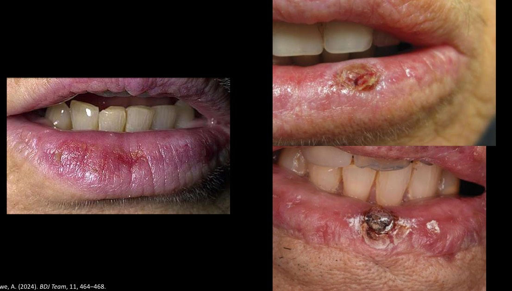
Slide 50 — Actinic cheilitis → lower-lip SCC spectrum. Diffuse white stippling + loss of mucocutaneous junction = actinic cheilitis. Indurated/ulcerated = SCC. Malignant transformation rate 10–30%. Lower lip receives ~3× more UV than upper lip.
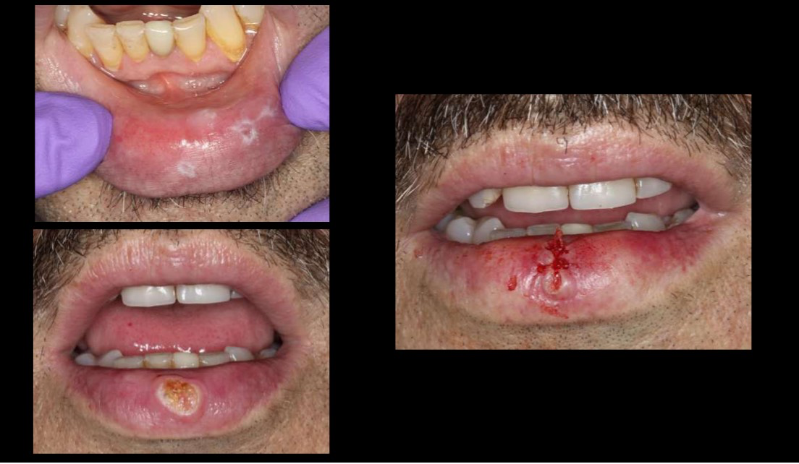
Slide 57 — Lip SCC: raised rolled borders of an ulcerated mass. Indurated, ulcerated lesion present >2–3 weeks = biopsy. No “watch and wait” when borders are raised/rolled and the lesion is indurated.
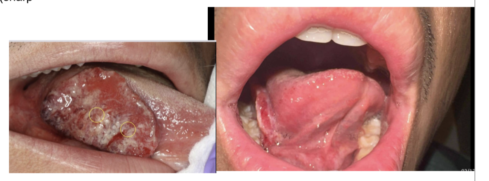
Slide 58 — Lateral tongue SCC natural history: early leukoplakia (2023) → exophytic fungating mass (Nov 2024). Untreated OSCC in real time. Catching this at the 2023 stage = dramatically better outcome.
SCC is >90% of all oral malignancies. 7th most common cancer worldwide. Median age at diagnosis ~66. M:F ratio 2–4:1 (male predominance shrinking as female smoking + HPV exposure rise). Rising incidence especially in younger patients without traditional risk factors.
>90%of all oral malignancies
7thmost common cancer worldwide
~66median age at diagnosis
2–4 : 1M : F ratio (narrowing)
Risk factors — the prof’s full list
Category
Specific factor
Notes
Tobacco
Cigarettes / cigars / pipes
Dose-dependent; pack-years
Smokeless (chewing, dip, snuff)
Risk localizes to where the quid sits
Betel quid / areca nut
Group 1 carcinogen; OSF + SCC; 600M+ users worldwide
Alcohol
Heavy chronic use
Solvent + acetaldehyde mutagen
Combo
Tobacco + alcohol
~30× multiplicative
Genetic
Fanconi anemia
OR ~40.6 — highest single OR
Dyskeratosis congenita
Telomere maintenance defect; ~1,000× baseline
Viral
HPV-16 (oropharynx only, NOT oral cavity)
See section 12
Light
UV (lip vermilion only)
NOT intraoral SCC
Iatrogenic
Chronic immunosuppression (transplant, HIV)
Higher SCC incidence
Oral hygiene
Poor OH, chronic mucosal trauma
Co-factor, not independent driver
Diet
Low fruit/vegetable intake; iron deficiency (Plummer-Vinson)
Modest contribution
Field cancerization — why SCC patients keep getting new SCCs: the entire upper aerodigestive epithelium has been bathed in the same carcinogens (smoke + ethanol). By the time one tumor is clinically visible, thousands of other dispersed clones across the mucosa have already accumulated TP53 / NOTCH1 / FAT1 / CDKN2A mutations. Slaughter coined “field cancerization” in 1953. Clinically: lifetime risk of a second primary SCC is ~3–5% per year — which is why post-treatment patients need lifelong oral exam screening.
Sites & presentation
Lateral / ventral tongue
42% — #1 site
Floor of mouth
16%
Other intraoral
42%
Where intraoral SCC actually shows up:lateral & ventral tongue (42%) > floor of mouth (16%) > everything else (gingiva, buccal, palate, retromolar trigone). The lateral tongue is the #1 site overall at 41.7% of all oral cavity cancers. Rising incidence in younger patients often without traditional risk factors.
Clinical Presentation — Warning Signs
Any of these should prompt biopsy or urgent referral
Exophytic mass or indurated area — induration on palpation is the most reliable physical finding
Persistent red or white patch that doesn’t resolve
Unexplained bleeding, numbness, or pain
Fixation to underlying structures
Firm, fixed, non-tender cervical lymphadenopathy
Rolled or raised borders
Nonhealing socket after extraction (occult tumor in the bone)
Loose teeth in non-perio patient (bony invasion)
Numbness of lip / tongue / cheek (perineural invasion)
~50% of oral SCCs at diagnosis are NON-ulcerated. Don’t anchor on “oral cancer = ulcer.” A persistent, indurated, asymmetric red or red/white plaque can be SCC without any ulceration. Induration on palpation is the most reliable physical finding.
Referral & Workup
Your role as a dentist: early detection and prompt referral
Urgent referral to oral and maxillofacial surgery or head & neck oncology
Incisional biopsy for histopathologic confirmation (do not delay out of seeding fear)
CT with contrast and/or MRI for locoregional staging
PET-CT for distant metastasis evaluation
Multidisciplinary tumor board (surgery, radiation oncology, medical oncology)
Perform systematic oral cancer screening at every visit. Any suspicious lesion persisting >2–3 weeks after removal of irritants warrants biopsy or referral. Do not adopt a “watch and wait” approach for clinically suspicious lesions. With erythroplakia, median time to cancer is only 3.7 months.
Lip vermilion SCC is different. Lower-lip SCC behaves like cutaneous SCC: UV-driven, much better prognosis (5-yr survival >90%), low metastatic potential. Don’t conflate it with intraoral SCC even though both are “oral.”
11
AJCC 8th Edition TNM
The staging table — what changed in the 8th edition and why
AJCC 8th edition (2018) made two big changes for oral cavity SCC:
Depth of invasion (DOI) was added to T-staging because tumor depth predicts mortality independently of surface size.
Extranodal extension (ENE) was incorporated into N-staging because ENE+ disease has dramatically worse outcomes.
T — Primary tumor (8th ed)
T stage
Greatest dimension
Depth of invasion (DOI)
T1
≤ 2 cm
DOI ≤ 5 mm
T2
≤ 2 cm with DOI > 5–10 mm OR > 2–4 cm with DOI ≤ 10 mm
DOI ≤ 10 mm
T3
> 4 cm OR any size with DOI > 10 mm
DOI > 10 mm
T4a
Moderately advanced — invades cortical bone of mandible/maxilla, inferior alveolar nerve, FOM, skin of face
What “depth of invasion” actually measures: DOI is measured by the pathologist from the level of the adjacent normal mucosal basement membrane down to the deepest point of tumor invasion — not from the ulcerated surface. Two tumors of the same surface diameter can have wildly different DOI: a flat ulcerated lesion that has burrowed 8 mm vs an exophytic 2-cm mass with only 3-mm DOI — the first is more dangerous because depth predicts nodal mets and vascular invasion better than surface size.
N — Regional nodes (8th ed) with ENE
N stage
Definition
N0
No regional lymph node metastasis
N1
Single ipsilateral node, ≤ 3 cm, ENE−
N2a
Single ipsilateral > 3–6 cm, ENE− OR single ipsilateral ≤ 3 cm with ENE+
N2b
Multiple ipsilateral nodes, all ≤ 6 cm, ENE−
N2c
Bilateral or contralateral nodes, ≤ 6 cm, ENE−
N3a
Any node > 6 cm, ENE−
N3b
Any clinically/pathologically ENE+ disease that doesn’t fit N2a — the worst nodal category
What “extranodal extension (ENE)” means: a metastatic tumor cell deposit inside a lymph node has eaten through the node’s fibrous capsule and is now growing in the surrounding fat or soft tissue. ENE+ disease has ~2× the recurrence rate and substantially worse survival than ENE− disease at the same nodal size. ENE+ patients get adjuvant chemoradiation rather than radiation alone.
Stage groupings & survival
Stage
TNM
5-yr OS
I
T1 N0 M0
~85%
II
T2 N0 M0
~70%
III
T3 N0 or T1–3 N1
~55%
IVA
T4a N0–1 or T1–4a N2
~35%
IVB
Any T4b or any N3
~20%
IVC
Any M1 (distant mets)
~10–15%
T1 = ≤2 cm AND DOI ≤5 mm
T2 = up to 4 cm AND DOI ≤10 mm
T3 = >4 cm OR DOI >10 mm
T4a = mod-advanced (cortical bone, IAN, FOM, skin of face)
Why oropharynx ≠ oral cavity, and why Gardasil 9 matters
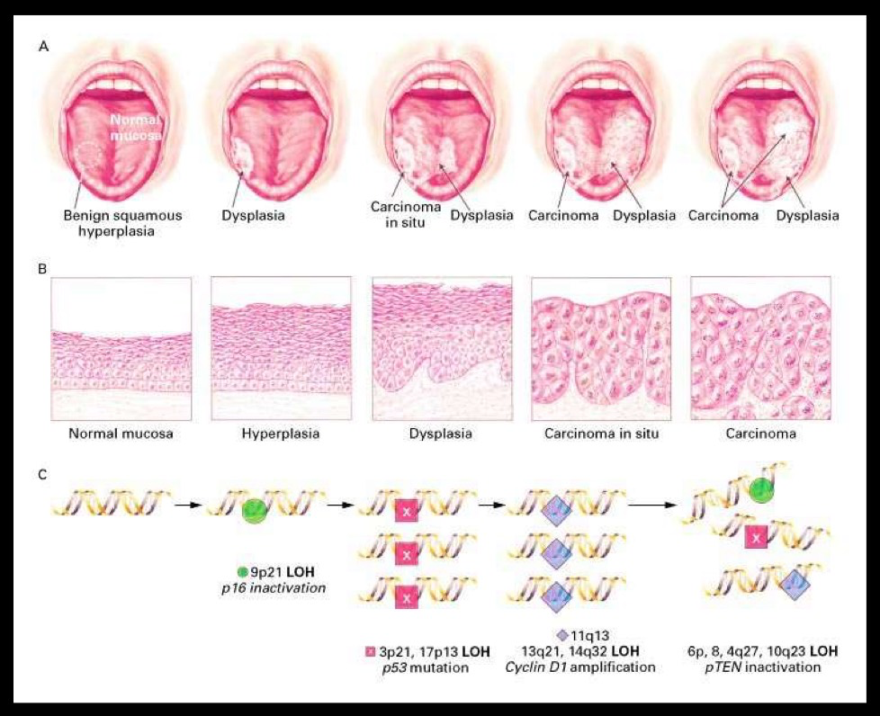
Slide 53 — SCC carcinogenesis: hyperplasia → dysplasia → CIS → invasion. Key molecular drivers: p16 inactivation, p53 mutation, Cyclin D1 amplification. The “horseshoe of death” (lateral tongue, FOM, soft palate) is where carcinogen-laden saliva pools.
The single most important distinction in this section: HPV-positive SCC of the oropharynx (tonsils, base of tongue, soft palate, posterior pharyngeal wall) is a different disease from HPV-positive SCC of the oral cavity (anterior 2/3 of tongue, FOM, buccal, gingiva, hard palate). Oropharyngeal HPV+ has better prognosis; oral cavity HPV+ does NOT.
HPV+ OPSCC vs HPV− OPSCC vs HPV+ OCSCC
Feature
HPV+ OPSCC
HPV− OPSCC
HPV+ OCSCC (oral cavity)
Typical patient
Younger (50s), white male, non- or light smoker, multiple oral-sex partners
Older (60s+), heavy smoker/drinker
Same demographic as HPV− OCSCC
Site
Tonsil, base of tongue (lymphoid-rich crypts)
Tonsil, BOT, soft palate
Anterior 2/3 tongue, FOM, etc.
HPV type
HPV-16 (~90%)
HPV negative
HPV-16 if any (uncommon)
p16 IHC
Strongly + (surrogate)
Negative
May be + or −; not a reliable surrogate in oral cavity
5-yr OS
~80–85%
~40%
Same as HPV− OCSCC (no benefit)
Stage at diagnosis
Often N+ early but small T
Often advanced T
Stage-dependent
Treatment response
Excellent — de-escalation trials ongoing
Standard CRT
Standard surgery ± CRT
HPV E6/E7 oncoproteins — the molecular punch: high-risk HPV types (16, 18, 31, 33, 45, 52, 58) integrate into the host genome and the early genes E6 and E7 are persistently expressed. E6 binds and degrades p53 (the genome guardian), and E7 binds and inactivates Rb (the cell-cycle brake). Loss of p53 → no apoptosis after DNA damage. Loss of Rb → constitutive S-phase entry. Result: a cell that divides relentlessly and tolerates mutations.
p16 IHC as an HPV surrogate: when E7 inactivates Rb, the cell loses negative feedback on the CDKN2A locus and p16 protein piles up in the nucleus & cytoplasm. Strong, diffuse p16 positivity (≥ 70% nuclear+cytoplasmic staining) in an OPSCC is the standard surrogate for HPV-driven disease — concordance with HPV PCR > 95%. In oral cavity SCC, p16 is NOT a reliable surrogate — you can be p16+ without HPV driving the tumor.
HPV positivity does NOT confer survival benefit in oral cavity SCC. The good-prognosis HPV+ story is oropharynx-specific. Oral cavity HPV+ tumors do not behave the same way and should not be de-escalated. HPV− OPSCC 5-yr OS is ~40% — not 50–55%.
Gardasil 9 covers HPV types 6, 11, 16, 18, 31, 33, 45, 52, 58. ACIP recommends routine vaccination for all children at age 11–12 (can start at 9), catch-up through age 26, and shared decision-making to age 45. Best efficacy when given before sexual debut. Vaccination is the single most powerful preventive intervention against HPV-driven OPSCC.
The “low-grade SCC” that virtually never metastasizes
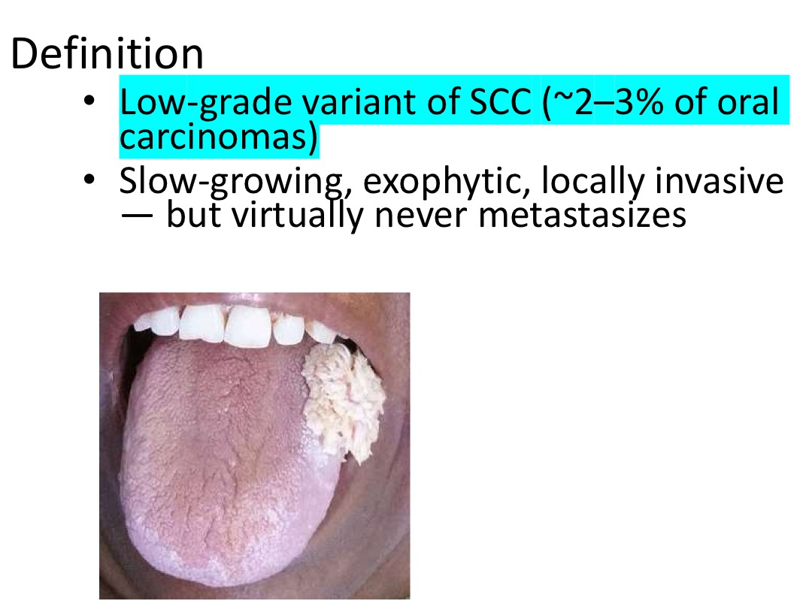
Slide 65 — Verrucous carcinoma. Exophytic, warty (cauliflower-like), white-pink mass; wide pushing border (not infiltrative); minimal cytologic atypia; smokeless tobacco = classic risk. Diagnosis requires deep biopsy to submucosa — superficial biopsy cannot rule it in.
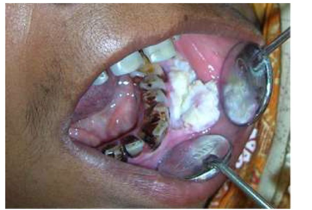
Slide 66a — Verrucous carcinoma on mandibular alveolar ridge. Broad exophytic white warty mass, classic smokeless tobacco placement site. Wide local excision required; node dissection not indicated for the pure form (0% cervical LN mets, 0% distant mets).
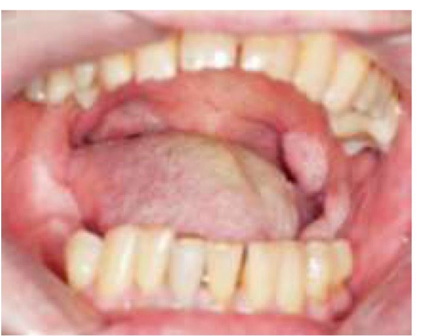
Slide 66b — Verrucous carcinoma, labial vestibule. Exophytic white mass from chronic tobacco pouch placement (“where the quid sits”). Locally destructive; does not metastasize in pure form.
Verrucous carcinoma is a low-grade variant of SCC. Slow-growing, exophytic, warty/cauliflower-like, locally destructive but virtually NEVER metastasizes (when pure verrucous — mixed verrucous-conventional SCC can). Classic association: chronic smokeless tobacco use at the site where the quid sits.
Clinical features
Slow-growing, exophytic, warty (verrucous), white-pink mass
Common sites: buccal mucosa, mandibular alveolar ridge, tongue, FOM — especially under chewing-tobacco placement
Wide pushing border on histology — not infiltrative
Bland cytology — minimal atypia in cells, easy to miss on superficial biopsy
Cervical lymphadenopathy is rare and usually reactive (not malignant)
Verrucous carcinoma biology in plain English: verrucous carcinoma cells are well-differentiated keratinocytes — they look almost normal under the microscope, with minimal nuclear atypia. What makes them malignant is architectural, not cytologic: they form thick keratinized rete pegs that push down into the lamina propria as a broad, blunt front, instead of infiltrating as small invasive nests. They lack the molecular machinery for distant metastasis (low MMP expression, intact E-cadherin, low EMT) so they spread by local extension only. They can still destroy bone and soft tissue locally if untreated.
Superficial biopsy → you cannot diagnose verrucous carcinoma. A surface bite captures only the warty top architecture, which looks like benign hyperkeratosis or “verrucous hyperplasia.” The diagnosis depends on seeing the deep pushing border. The biopsy must include the deep submucosa — either an excisional biopsy or a deep incisional bite that goes through the lesion to underlying connective tissue.
Treatment
Wide local surgical excision with clear margins — treatment of choice
Radiation therapy historically discouraged because of (mostly disproven) reports of anaplastic transformation after RT — modern data suggests RT is acceptable when surgery is not feasible
Cervical lymph node dissection is generally NOT indicated in pure verrucous carcinoma (no nodal mets) — reserved for cases with proven mixed conventional SCC component
Excellent prognosis: 5-yr OS > 85% with adequate excision; recurrence rate ~10% if margins clear
“Mixed” verrucous + conventional SCC is more dangerous than either pure form. When a pathologist reports a tumor with verrucous architecture but also has foci of conventional SCC, treat it as conventional SCC — node dissection considered, RT may be added. Pure verrucous behavior only applies when all the tumor is verrucous.
Verrucous CA: low-grade SCC variant, NO mets in pure form
Cause: chronic smokeless tobacco (where quid sits)
Diagnosis requires DEEP biopsy (deep pushing border; surface bite = no diagnosis)
Treatment: wide local excision; node dissection NOT routine in pure form
5-yr OS > 85%
Mixed verrucous + conventional → treat as conventional SCC
14
Oral Melanoma
Rare, deadly, on the palate — and UV is NOT the cause
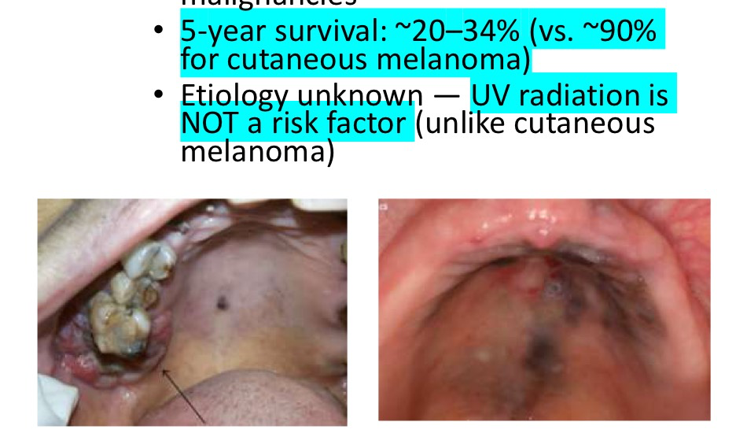
Slide 67 — Oral melanoma, hard palate. Color variation (brown/black/red) + asymmetric borders + ulceration. UV is NOT the cause — driven by c-KIT/NRAS. 5-yr OS ~20–34% (vs. ~90% for cutaneous melanoma). ~50% occur on hard palate.
Oral melanoma is rare (~0.5% of all melanomas, < 1% of oral malignancies) but devastating. ~50% present on the hard palate, with maxillary gingiva second. UV light is NOT the etiology — it cannot reach intraoral mucosa. Cause is unknown for most cases.
Clinical features
Asymmetric, irregular pigmented (brown, blue, black) macule or nodule
~15% are amelanotic (pink/red without pigment, worse prognosis) — easy to miss
Most asymptomatic at presentation; ulceration / bleeding is late
Often diagnosed at advanced stage — high mortality
Oral mucosal vs cutaneous melanoma
Feature
Oral mucosal melanoma
Cutaneous melanoma
Etiology
Unknown — UV NOT involved
UV exposure
Site
Hard palate (~50%), max gingiva
Sun-exposed skin
Driver mutations
c-KIT (~20–30%), NRAS; BRAF rare
BRAF V600E (~50%), NRAS
Mutation burden
Low
High (UV signature)
Amelanotic rate
~15% (pink/red; worse prognosis)
Rare; ~2–8%
5-yr OS
~15–25% — among the worst of any oral malignancy
~92% (all stages combined)
Stage at dx
Often advanced
Usually localized (visible on skin)
Treatment
Wide excision ± neck dissection; immuno (PD-1) for advanced; BRAF inhibitors generally not effective
Excision + sentinel node; BRAF/MEK inhibitors if BRAF+; PD-1 inhibitors
c-KIT vs BRAF — why the same drug doesn’t work in both: cutaneous melanoma’s UV-driven mutations preferentially hit BRAF (V600E), making it responsive to BRAF inhibitors (vemurafenib, dabrafenib) ± MEK inhibitors. Oral mucosal melanoma rarely has BRAF mutations — instead a meaningful fraction (20–30%) carries activating mutations in c-KIT. c-KIT-mutant oral melanomas may respond to imatinib (the same drug used for GIST and CML) in select cases, but most oral melanomas don’t have a targetable driver, and outcomes lag far behind cutaneous melanoma.
Why oral melanoma prognosis is so bad: three reasons stack up. (1) Late detection — intraoral pigmented lesions are often only noticed at routine dental exam; patients never see them. (2) Vascular-rich submucosa — the palate and gingiva have abundant blood and lymphatic supply, so melanoma cells reach the bloodstream early. (3) Few targetable drivers — without BRAF mutations, the modern targeted-therapy revolution has largely bypassed oral melanoma.
UV is NOT the cause of oral mucosal melanoma. Repeat: not a cause. Mucosal melanoma is a biologically distinct disease from cutaneous melanoma. If a question lists “etiology of oral melanoma” with UV as an option, it’s the wrong answer. Also: amelanotic oral melanoma is ~15% of cases (NOT 25%) — the pink/red lesions that are easy to miss.
Pigmented lesions on the hard palate need biopsy. The differential includes amalgam tattoo (most common), racial pigmentation (bilateral, symmetric, usually gingival), oral melanotic macule (small, < 5 mm, well-defined), Peutz-Jeghers, Addison’s, smoker’s melanosis, and oral melanoma. Asymmetric, irregular, > 5 mm, growing, or located on hard palate / maxillary gingiva — biopsy.
Oral melanoma: ~50% hard palate — #1 site
UV is NOT the cause
c-KIT mutations 20–30%; BRAF rare (opposite of cutaneous)
5-yr OS ~15–25% — worst of any oral malignancy
~15% are amelanotic (pink/red, no pigment) — worse prognosis
c-KIT+ → imatinib; PD-1 inhibitors for advanced disease
15
Crammable Recap
Every prof-highlighted item + notecard candidates — QA-verified facts
This is the notecard. Color legend: RED = rules / red flags · BLUE = diseases / entities · GREEN = treatments / drugs · PURPLE = numbers / stats. Use this to write your double-sided 5″×8″ handwritten card.
39.6% of progressors had NO dysplasia on first biopsy Erythroplakia ~90% already severe dysplasia/CIS/SCC at biopsy
Erythroplakia median time to cancer = 3.7 mo (leukoplakia = 25 mo) PVL/PL 48–50% MT (annual rate ~9.3%, 8× conventional) Tobacco + alcohol = ~30× multiplicative UV NOT cause of intraoral SCC or oral melanoma
Biopsy RED over white · deep for verrucous Tumor seeding from biopsy = MYTH (~0.00012% FNA)
HPV+ benefit = oropharynx ONLY, NOT oral cavity
NUMBERS
US 2024: 36,600 new / 12,230 deaths >50% present with mets; rising 1.8%/yr
Oral tongue 41.7% #1 site
Stage 5-yr OS: localized 85% → reg 70% → dist 40%
Fanconi OR ~40.6
Clinical sensitivity 60%, specificity 62% for cancer
OSF MT 5.1%, ~36 mo to cancer
OLP / OLL ~1.4% MT each
SCC: >90% oral malignancy, 7th worldwide, age ~66, M:F 2–4:1
OPMDs
Leukoplakia = white plaque, dx of EXCLUSION (rule out: frictional keratosis, candida, lichen planus, WSN)
5-yr MT by grade: No dysp 2.2% → mild 2.6–11.9% → mod 4.1–8.7% → severe 29.2–32.2%
Mild dysp: 18–39% spontaneous resolution; annual MT ~2%/yr Erythroplakia = red velvety; dx of EXCLUSION (rule out: atrophic glossitis, MRG, plasma cell gingivitis, erosive OLP) TWO STATS: ~50% MT rate; ~75–90% already severe dysp/CIS/SCC at 1st biopsy PVL: F:M 2:1, gingiva, “ring around collar”, non-smoker, 48–50% MT
PVL major criteria: ≥2 sites, enlargement, recurrence after tx OSF: areca nut → arecoline → fibroblast EMT → HIF-1α → SNAIL → cancer; trismus, 5.1% MT, 36 mo OLP: bilateral, Wickham striae, sawtooth rete + band lymph + Civatte bodies OLL 3 types: drug reactions + contact reactions + oral lichenoid dysplasia (higher MT)
CHEMOPREVENTION
Imiquimod 5% = TLR-7 agonist → innate immunity; Phase I/II USC ALA-PDT = ALA → protoporphyrin IX → light → ROS; 66–100% CR
13-cis-RA 67% CR · Vit A 300k IU 52% CR · Fenretinide 87% CR
Bleomycin 0.5–1%: 25–40% CR
Curcumin 3.6g/d: 67.5% vs 55.3% placebo RCT (p=0.03) Beta-carotene MAY INCREASE risk in smokers (CARET) RP2 (modified HSV-1): Phase II BWH/DFCI (intralesional)
ONYX-015: 37% histologic resolution · rAd-p53: 72% clinical response
Calcipotriene ± 5-FU: NCCN preferred cutaneous field
DYSPLASIA TX
Scalpel = gold standard (margins; OR 3.6 if positive) CO2 laser: HR 0.14 MT; 52.6% recurrence; ≥3mm margins Diode laser: 93.5% CR; 6.5% recurrence at 39 mo Cryo: 100% regression; mean 3.1 tx; <2cm² ALA-PDT for multifocal/large field; 8.3% MT at 3yr
Margins: 5 mm peripheral, ≥2 mm deep
Severe dysplasia/CIS → excise + Q3-mo lifelong
SIDE B · SCC, AJCC, HPV-SCC, verrucous, melanoma
OD 530 · Epithelial Pathoses & SCC · Side B
SCC OVERVIEW
>90% oral malig, 7th worldwide, age ~66, M:F 2–4:1
Sites: lateral/ventral tongue 42% > FOM 16%
Rising 1.8%/yr; younger pts often no trad risk factors
~50% non-ulcerated — induration is the key sign
Field cancerization: ~3–5%/yr 2nd primary risk
WARNING SIGNS
Non-healing ulcer >2–3 wk
Exophytic mass or indurated area
Red/white patch that persists
Bleeding / numbness / pain
Fixation to structures
Firm fixed non-tender cervical LAD
T1: ≤2 cm AND DOI ≤5 mm T2: up to 4 cm AND DOI ≤10 mm T3: >4 cm OR DOI >10 mm T4a: cortical bone, IAN, FOM, skin T4b: skull base, ICA encasement, pterygoid plates
AJCC 8 N-stage
N1: 1 ipsi ≤3 cm, ENE− N2a: 1 ipsi >3–6 cm OR any ENE+ ≤3 cm N2b: multi ipsi ≤6 cm N2c: bilat/contralat ≤6 cm N3a: any >6 cm N3b: any other ENE+ — worst ENE+ → ~2× recurrence; gets adjuvant CRT
Low-grade SCC, slow, exophytic warty Virtually NEVER metastasizes (pure form)
Cause: chronic smokeless tobacco
Dx: DEEP biopsy — need to see pushing border
Tx: wide excision; no node dissection in pure form
Mixed verrucous + conventional → treat as conventional
ORAL MELANOMA
~50% hard palate — #1 site UV is NOT the cause (skin = UV; mucosa = unknown) c-KIT 20–30%, NRAS; BRAF rare
5-yr OS 15–25% — worst oral malig
~15% amelanotic (pink/red, no pigment) worse prognosis
c-KIT+ → imatinib; PD-1 inhibitors for advanced
Heck NOT in Gardasil 9 (HPV 13/32) UV NOT cause of intraoral SCC or oral melanoma Erythroplakia > leukoplakia — biopsy red part
Tumor seeding myth — biopsy first (~0.00012% FNA)
~50% SCC non-ulcerated
p16 IHC ONLY reliable in oropharynx
Verrucous needs DEEP biopsy
Bilateral symmetric Wickham → topical steroid first Amelanotic melanoma ~15% (NOT 25%) HPV− OPSCC OS ~40% (NOT 50–55%)
Last-pass cram trio: (1) every “white patch + red component” → biopsy the red. (2) Tobacco + alcohol is multiplicative ~30×. (3) HPV+ OPSCC is a different disease from HPV+ OCSCC — survival benefit is oropharynx-only.
QA-verified critical facts — verify in master: Amelanotic melanoma rate = ~15% (not 25%). Erythroplakia has TWO metrics: ~50% MT rate AND ~75–90% already severe dysplasia/CIS/SCC at first biopsy. HPV− OPSCC 5-yr OS = ~40% (not 50–55%).
PART 4 OF 5
Salivary Gland Disorders
Stoopler — 39 slides | 8-agent compiled
📋 Exam: 50 MCQ + case MCQs · 90 min · one 5″×8″ double-sided handwritten notecard (due at end). Notecard template → sec-notecard-v2.
TIER 1 — TEST-WORTHY
Guaranteed Exam Content
Prof explicitly flagged these + strong visual/verbal emphasis. Hit these first on the notecard.
Ocular staining score ≥5 or Schirmer's test ≤5 mm/5 min
1 pt
Either ocular test counts
Unstimulated whole saliva flow ≤0.1 mL/min
1 pt
Threshold matches hyposalivation cutoff
Anti-SSB (La) positive
1 pt
Less sensitive than SSA alone
Threshold: Score ≥4 points = current classification for Sjögren syndrome.
Exclusions (must rule out first): Head/neck radiation history, active hepatitis C infection, sarcoidosis, IgG4-related disease, recent anticholinergic use.
Dentist's role: Order Anti-SSA (Ro), Anti-SSB (La), ANA, RF; refer to Oral Medicine or OMFS for minor salivary gland biopsy; early detection → preserve gland function (DMARDs, clinical trials).
Topical recipe: "2 drops of pilocarpine 4% ophthalmic solution in 1 tsp of water, hold for 5 minutes, spit out" (given "for the exam")
❓ Prof asked class: Is pilocarpine selective or non-selective? Answer: Non-selective (has highest affinity for M3 but binds all muscarinic receptors). This is the trick.
The 10 functions of saliva as presented in the prof's hub-and-spoke infographic. Central hub: "SALIVA" (dark teal, bold white). Memorize all 10 by first word — Lubrication / Dental / Digestion / Antimicrobial / Cleansing / Sensory / Communication / Wound / Hormone / Diagnostic. Prof called this a "favorite board question."
More mucous, calcium-rich saliva (thicker, harder to move)
Board Pearl: Not all stones are radiopaque — ultrasound or CT may be needed.
Sialolith formation: mucin plug → gradual mineral accumulation. Early stones not yet radiopaque → order US or CT if stone suspected on plain film.
Wharton-duct sialolith on panoramic radiograph. Submandibular predominates (80–90%): calcium-rich mucous saliva + tortuous upward duct. Not all stones radiopaque — early stones = mucin plugs; order US or CT.
🩺 Notecard #8: "Sialoliths: submandib 80–90% (tortuous duct, gravity, Ca-rich saliva). Meal-time pain+swelling=pathognomonic. Not all radiopaque→US/CT."
9. Clotrimazole + Diabetes Contraindication 🔥 "IT'S GONNA SHOW UP AGAIN"
Clotrimazole (Mycelex) troches contain sugar → contraindicated in DM. Flagged for retest on future exams.
Clotrimazole (Mycelex) is a troche that contains sugar
Contraindicated in diabetic patients (especially uncontrolled diabetes)
Candidiasis (especially erythematous) — NOT pseudomembranous
Dysphagia
Mucosal trauma
Difficulty wearing dentures
🩺 High-yield DDx: Erythematous candidiasis (red, flat) is the type associated with dry mouth — NOT pseudomembranous (white patches). Prof emphasized: don't miss this in dry-mouth patients — look for the red, flat type, not white patches.
12. Seronegative Sjögren's — Can Diagnosis Still Be Made? 🔥 KNOWLEDGE CHECK
❓ Prof Knowledge Check (3-slide MCQ sequence): "A 52-year-old woman with objectively dry mouth and dry eyes has negative anti-SSA and anti-SSB. Can she have Sjögren syndrome?"
Answer (slide 27):YES — up to 30% with positive biopsy/Schirmer test may be seronegative for antibodies.
Seronegative Sjögren's case: negative SSA/SSB does NOT rule out diagnosis. Up to 30% are seronegative. Biopsy (3 pts) + Schirmer (1 pt) = ≥4 ACR-EULAR threshold without any serology.
Management (slide 28):
Increase recall frequency
Start high potency fluoride therapy
Counsel on caries risk, OHI
Refer to Oral Medicine and Rheumatology → Finish workup
Minor salivary gland biopsy
Ocular staining or Schirmer Test
Sialagogue therapy
OTC saliva products
Hydration
🩺 Dentist's role: Negative serology ≠ rules out Sjögren's. Biopsy can be patchy; scores from biopsy + Schirmer can still reach ≥4 ACR-EULAR points without positive serology.
TIER 2 — LIKELY-WORTHY
High-Yield Supporting Content
Notecard-eligible if space permits. Know these for case MCQs.
Large/recurrent stones: Refer for sialoendoscopy → surgical removal if needed
Sialendoscopy: gland-sparing stone removal via endoscope through duct orifice. 85–92% gland preservation. Indicated: stone >2 mm, failed conservative Rx 1–2 weeks, or recurrent sx.
T2-10. Tubarial Salivary Glands — "New Glands!"
Discovered 2021 in Netherlands: Valstar MH, et al. 2021. Radiother Oncol. 154:292–298.
Article: "The tubarial salivary glands: A potential new organ at risk for radiotherapy"
Location: nasopharynx / nasal turbinate area (torus tubarius region)
Function: contribute to posterior oral saliva flow
Clinical implication (testable): Spare tubarial glands during radiation planning to preserve salivary function
Tubarial salivary glands at torus tubarius (nasopharynx), identified 2021 (Valstar et al.). Contribute to posterior oral saliva flow. Spare during H&N radiation planning.
TIER 3 — BACKGROUND CONTEXT
Supporting Context
Don't notecard. Collapsed by default. Open if you want the "why" behind tier-1 facts.
T3-1. Why Dentists Should Care About Saliva
Section divider. Clinical context: dentists are primary detectors of dry mouth because patients rarely spontaneously report it. When saliva production drops, all 10 functions break down simultaneously — dental protection, antimicrobial defense, digestion, wound healing, and more. This is why "dry mouth" is clinically dangerous, not just uncomfortable.
Floor-of-mouth clinical view showing the sublingual caruncles and bilateral Wharton duct openings, where submandibular gland saliva empties into the oral cavity. Dentists are ideally positioned to detect early hyposalivation: inspect the floor of mouth for reduced or absent pooling — absence of the normal salivary pool is a key early sign.
T3-2. Practice Case — 77-year-old with Floor-of-Mouth Cancer
Patient: 77 y.o. male with DM type 2 (metformin, no insulin), CIDP, OSA, CAD, CVA, psoriatic arthritis, gout, BPH, anemia, glaucoma. CC: Tongue pain.
Prior histopathology: "Squamous mucosa with ulceration and granulation tissue. Negative for dysplasia." — From non-OMAX pathologist; language doesn't say "reactive" = red flag.
Case teaching (case MCQ fodder):
"Negative for dysplasia" from non-specialist pathologist ≠ reassuring
Steroids reduced pain → still red/white → second injection, no improvement
Then: bleeding → spontaneous hemorrhage = new vessel formation = cancer until proven otherwise
Re-biopsy by oral surgery → cancer confirmed (floor of mouth + alveolar ridge)
Rule: Failed steroids ×2 OR spontaneous bleeding → cancer until proven otherwise → re-biopsy + urgent referral.
T3-3. Sialagogue Pharmacology — Full Muscarinic Receptor Table
Cultural competency pearl: Fasting patients cannot adhere to TID/QID regimens. Adjust to suhoor/iftar timing (QD or BID preferred).
T3-6. Sialolithiasis Imaging Modalities
Occlusal radiograph: first-line for submandibular stones
Panoramic radiograph: standard
Ultrasound (via referral): excellent for non-radiopaque stones (early stones = mucin plugs, not yet mineralized)
CT: if needed for surgical planning
⚡ Parotid-specific flow testing (suction cup cannulation of Stensen's duct) — demoted. Prof noted it is technically difficult and something she refers out to specialists — de-emphasized for this exam.
T3-7. Mucocele Surgical Technique (verbal)
Technique: incise over dome ("like a C-section"), blunt dissect, deliver intact.
Gland Types + Waterfall Mnemonic "Parotid=serous(thin/fast). Submandib=serous+mucous(mixed). Sublingual=mucous(thick/slow). Floor-of-mouth glands go first in hyposal."
Primary lecture: Salivary Gland Disorders — Risk, Recognition & Management. Oral Medicine Midterm, BU GSDM. Dr. E. Stoopler (attending). 39 slides + audio transcript. 02/20/2026.
ACR-EULAR criteria: Shiboski SC, et al. 2016 ACR-EULAR Classification Criteria for Primary Sjögren's Syndrome. Ann Rheum Dis. 2017;76(1):9–16.
Challacombe Scale: Challacombe SJ. Difficulties in assessing the dry mouth. Gerodontology. 1997.
Tubarial glands: Valstar MH, et al. The tubarial salivary glands: A potential new organ at risk for radiotherapy. Radiother Oncol. 2021;154:292–298.
Lymphoma images: Burket's Oral Medicine, pp. 219–220.
Radiation caries: Palmier NR et al. 2020.
Compiled by: 8-agent team (5 scouts + synthesizer + QA + compiler). QA verdict: PASS WITH CORRECTIONS (applied). 2026-05-02.
Part 5 of 5
Exam Notecard v2 — 4-Lecture Midterm
Same format as the final-exam notecard. Study the card as one unit — then fold it in your mind by lecture color.
Side A
SIDE A — L1 INFECTIOUS (red) + L2 ALLERGIES & IMMUNOLOGIC (blue) | clinical anchors
L1 · INFECTIOUS DISEASES
EXAM FORMAT (Every Case)
5-step structure — prof repeated at start of every case: (1) Describe the lesion. (2) Gather additional history. (3) Build DDx of 3–4 (most likely → least likely). (4) Decide on diagnostic tests. (5) Form a treatment plan.
White plaques that WIPE OFF — DDx: (1) Pseudomembranous candidiasis [top pick] · (2) Strep throat · (3) Herpangina · (4) Gonorrhea. Candidiasis = first answer; know alternatives for DDx format questions.
Impetigo: honey crusts over lip/perioral skin
Impetigo
Most common bacterial skin infxn 2–5 yr olds. Cause: Staph aureus / β-hemolytic strep. Honey-colored crusts ("cornflakes glued on"). Topical: mupirocin 2% TID ×5d. Systemic: Augmentin — dose by WEIGHT not age (<40 kg = 25 mg/kg/d BID; ≥40 kg = 500 mg).
Syphilis — 3 Stages
Cause: T. pallidum "cursed corkscrews". 1°: chancre 3–90 d; painless + indurated + clean base + LAD; 85% genital/10% anal/4% oral; serology NEG first 6 wk; IHC 64–94% vs silver stain 0–41%. Tx: Benzathine Pen G 2.4 MU IM ×1; DPH reportable. 2°: 4–10 wk later; split papules + mucous patches + condyloma lata; HIGHLY infectious. 3°: gumma (palate/tongue), interstitial glossitis, tabes dorsalis; 1–30 yr latency; 30% untreated → 3°.
Tuberculosis (TB)
Tongue = #1 oral site. NEVER biopsy first — isolate + NAAT (Xpert MTB/RIF). Tx: PIRE ×8 wk → IR ×16 wk DOT. DPH reportable.
Candida 6 subtypes — key clinical images
Candida — 6 Subtypes
Pseudomembranous (wipes off → white cottage-cheese plaques). Erythematous (hyposalivation unique cause). Median rhomboid (kissing lesion on palate). Angular cheilitis (VD loss unique). Denture stomatitis (probably NOT true infection). Hyperplastic CANNOT wipe off → biopsy.
Drugs: clotrimazole 10 mg 5×/d ×10d (HIGH SUGAR — avoid diabetics, LFTs↑15%); nystatin 5 mL QID; miconazole 2% gel; Mycolog II BID (angular); fluconazole 100–200 mg QD ×7–14d. All -azoles → check LFTs.
Measles: Koplik spots — 70% of pts, bluish-white buccal, appear 1–2d BEFORE rash. 3C's (cough+coryza+conjunctivitis). Contagious 4d before–4d after rash. PEP: MMR ≤72 h OR Ig ≤6 d. Vit A 200,000 IU ≥12 mo. Encephalitis 1/1,000. N-95 + negative pressure room. DPH reportable.
Mumps: 10–30% NO parotid swelling; serious complications WITHOUT parotitis; CNS ~50%; RT-PCR gold std; contagious 1–2d before sx to 14d after; orchitis 3–10%; subfertility 13%; 3rd MMR 61–88% additional protection.
EBV-MCU: EBER ISH required; 45% spontaneous regression; 91% immunosuppressed; MTX/AZA/cyclosporine triggers; distinguish from lymphoma: normal LDH + IL-2R + EBV DNA <1,000 copies/mL.
Syphilis chancre vs condyloma lata vs gumma
L2 · ALLERGIES & IMMUNOLOGIC
Hypersensitivity Types
I = IgE / mast cell / minutes–hours (latex, penicillin, chlorhexidine). II = cytotoxic IgG/IgM (PV-desmoglein, MMP-BMZ). III = immune complex. IV = T-cell / 24–72 h (metals, acrylates, amalgam, flavorings). Pseudoallergic = bisulfite preservatives / no sensitization. LA allergy <1% truly allergic; most vasovagal or pseudoallergic (bisulfite).
Recurrent Aphthous Stomatitis (RAS)
3 types: Minor 80% (3–10 mm, 7–14 d, no scar); Major 10–15% (1–3 cm, 2–6 wk, may scar); Herpetiform 5–10% (up to 100 ulcers, NOT HSV). Nonkeratinized mucosa only. New onset >40 = systemic workup. Complex aphthosis ≥3 ulcers = 60% have underlying disease. Ladder: triamcinolone 0.1% paste QID → fluocinonide 0.05% → clobetasol 0.05%. DO NOT use silver nitrate cautery (necrosis + argyria).
OLP / Geographic Tongue / TLP
OLP: 0.1–2.2%, F:M 3:2, middle-aged. Wickham striae bilateral posterior buccal. Purple polygonal pruritic papules on wrists (skin LP). Reticular = asymptomatic; erosive = painful desquamative gingivitis. Unilateral / high-risk site → biopsy to exclude dysplasia. Monitor for iatrogenic candidiasis with topical steroids. EXAM: OLP = auto-inflammatory (T-cell-mediated basal keratinocyte destruction), NOT autoimmune. No circulating autoantibodies. Writing "autoimmune" is marked wrong by this prof. Contrast: MMP and PV ARE autoimmune (IgG-mediated). Lip OLP = tacrolimus 0.1%, NOT corticosteroids. Steroids on vermilion → irreversible fat pad atrophy / permanent cosmetic deformity. One-way door. Intraoral mucosa CAN receive topical steroids normally.
Geographic tongue: 3 D's: Depapillated, Demarcated, Dynamic (migratory); up to 3% prevalence; psoriasis/fissured tongue assoc. Serpiginous (snake-like) white border; does NOT scrape off, does NOT respond to antifungals (vs. candidiasis which does).
TLP: fungiform papillae, tongue tip, self-limited 2–15 d; reassurance.
Drug Gingival Hyperplasia
Phenytoin ~50%, cyclosporine 25–70%, nifedipine/amlodipine 6–25%. Onset 1–3 mo. Meticulous plaque control = MOST important. Cyclosporine + nifedipine = synergistic. Surgical recurrence 35% in 18 mo. Males 3× more likely.
MMP linear BMZ vs PV chicken-wire DIF pattern
MMP vs PV — Head-to-Head
Nikolsky sign: MMP = NEGATIVE (subepithelial, tense), PV = POSITIVE (intraepithelial, flaccid). Mnemonic: "PemphigoiD lives DEEP" — D = deep = subepithelial = Nikolsky NEG.
MMP: IgG anti-BMZ (BP180, BP230, laminin 332, type VII collagen). DIF = linear IgG/IgA/C3 at BMZ. Hallmark = desquamative gingivitis. Ocular 61–70% → symblepharon → blindness. Refer ALL MMP to ophtho even if asymptomatic. Anti-laminin 332 = 25% → adenocarcinoma. Tx: topical steroids + dapsone 50–100 mg/d; ocular = prednisone + mycophenolate.
PV: IgG anti-DSG3 (±DSG1). DIF = "chicken-wire" intercellular IgG. Oral first >50%. All oral surfaces. PDAI: <15 = topicals; 15–45 = rituximab + pred 0.5 mg/kg; >45 = MEDICAL EMERGENCY → ED. Biopsy = perilesional + Michel solution.
PAMS — Board Favorite
Always malignancy: NHL ~40%, CLL ~20%, Castleman ~18%. Oral first in ~45%. Mortality 60–90%. Bronchiolitis obliterans = #1 cause of death. Rituximab less effective than PV. Anti-plakin antibodies. 5 polymorphous phenotypes. Castleman resection → remission possible.
EM vs SJS/TEN — Separate Diseases (NOT a Spectrum)
EXAM TRAP: EM and SJS are SEPARATE diseases — NOT a spectrum. Different triggers, different prognosis, different management. Do not write "EM/SJS/TEN spectrum" — prof called this "old, old thought process" and will mark it wrong.
EM: HSV ~70% (infection-triggered); raised 3-ring targets; acral; self-limited. RIME: Mycoplasma; mucosa-dominant; minimal skin.
SJS: <10% BSA; drugs ~85% (drug-triggered); mortality 1–5%. TEN: >30% BSA; mortality 25–50%. SJS/TEN Overlap = 10–30% BSA. High-risk drugs: sulfonamides, carbamazepine, phenytoin, lamotrigine, allopurinol. Stop drug = most important intervention. EM prophylaxis: valacyclovir 500 mg BID ≥6 mo.
Plasma cell gingivitis — fiery red generalized gingiva
Allergic Contact / PCG / Patch Testing
Type IV contact triggers: Ni, Cr, Co, acrylates, amalgam, cinnamon, mint, chlorhexidine. Oral lichenoid reaction: unilateral, restoration-adjacent. Patch testing = gold std for Type IV; positive alone ≠ causation. Skin prick/RAST = Type I (latex, PCN). Latex allergy: universal latex-free protocol; schedule first AM.
PCG exam phrase (verbatim expected): "Generalized erythema and edema of the maxillary and mandibular FACIAL gingiva." Key word = FACIAL (not lingual/palatal). Fire-engine red, NO Wickham striae (OLP has striae; PCG does not). Trigger: eliminate cinnamaldehyde + benzoates (cinnamon gum, toothpaste labeled "aroma"). Tx = allergen elimination only. TRAP: IBS ≠ IBD. IBS (irritable bowel syndrome) = functional GI disorder, NO oral manifestations — IBS history on a PCG case is a RED HERRING. IBD (Crohn's/UC) = inflammatory, CAN have oral manifestations: oral Crohn's = cobblestone mucosa, lip/cheek swelling, linear ulcers (oral facial granulomatosis). When GI history appears on oral medicine case → clarify Crohn's/UC (IBD), not IBS. STEROID TRAP: Triamcinolone acetonide 0.1% dental paste = WEAKEST. Has "dental" in name → students default to it → WRONG. Potency: Clobetasol 0.05% (strongest) > Fluocinonide 0.05% > Triamcinolone 0.1% (weakest). SLS-free toothpaste: Sensodyne is NOT SLS-free. Recommend Doctor Bob (unflavored, SLS-free, dye-free, gluten-free).
36,600 new / 12,230 deaths/yr (US 2024). >50% present with mets at diagnosis. Oral tongue = 41.7% #1 site; rising 1.8%/yr. 5-yr OS: localized 85% → regional 70% → distant 40%. Tobacco + alcohol = ~30× (multiplicative, NOT additive). Fanconi anemia OR ~40.6 — highest per-patient risk. UV = lip vermilion ONLY, NOT intraoral SCC.
Leukoplakia vs erythroplakia vs speckled lesion
Leukoplakia — Definition & MT Rates
WHO: "white plaque of questionable risk, diagnosis of exclusion." Clinical sensitivity 60%, specificity 62% → always biopsy. 5-yr MT by dysplasia: no dysplasia 2.2% → mild 2.6–11.9% → moderate 4.1–8.7% → severe 29.2–32.2%. Overall: 6.6–8.4%, ~2%/yr. 39.6% of progressors had NO dysplasia on first biopsy → never "done" after one benign read. Annual re-biopsy if change. Size >200 mm² = 2–4× higher risk. High-risk sites: lateral/ventral tongue, FOM. Female paradox: higher MT despite lower incidence.
Erythroplakia
~75–90% already severe dysplasia/CIS/SCC at first biopsy. MT rate ~50%. Median time to cancer: 3.7 months (vs leukoplakia 25 mo). Biopsy the RED component in mixed lesions. Speckled/non-homogeneous = same risk as erythroplakia.
PVL — Worst OPMD
PVL MT 48–50%, some up to 100% over lifetime; 8× higher than conventional; annual rate 9.3%. F:M 2:1; non-smokers; gingiva most common "ring around the collar"; multifocal, recurs after excision. Major criteria: ≥2 oral sites / new lesions during follow-up / recurrence after treatment.
SCC — indurated ulcer vs exophytic mass lateral tongue
Biopsy Site Selection Rules
"Red over white, edge over center, deep for verrucous, multiple for big". Avoid necrotic ulcer center. Tumor seeding = myth (FNA ~0.00012%, core ~0.0011%). Verrucous: must biopsy to deep submucosa to see pushing border.
Dysplasia Management
Scalpel gold std; positive margins OR 3.6 for recurrence; aim 5 mm peripheral. CO₂ laser HR 0.14 for MT vs observation; 52.6% recurrence. ALA-PDT: 66–100% CR, 8.3% MT at 3 yr; best for multifocal/large field. Imiquimod = TLR-7 agonist; sustained response documented 3+ yr even without full clinical resolution. Severe dysplasia: excise with clear margins + Q3-mo surveillance lifelong. Treatment goal: "You don't have to get rid of the leukoplakia to have a win." Goal = STABLE and CANCER-FREE, not plaque elimination. Manage as a chronic condition. Chemoprevention tables NOT tested — prof stated verbatim: "You don't have to know anything from these tables." Testable: imiquimod = TLR-7 agonist; ALA-PDT = 66–100% CR; beta-carotene may INCREASE risk in smokers (CARET trial); goal = cancer prevention.
SCC + AJCC 8th Ed Staging
SCC >90% all oral malignancies; median age ~66; M:F 2–4:1. Lateral/ventral tongue 42% #1 site. Warning: non-healing ulcer >2–3 wk, induration (most reliable), rolled borders, fixed nodes. ~50% non-ulcerated at diagnosis. AJCC 8th: added DOI to T-stage (T1 ≤5 mm; T2 ≤10 mm; T3 >10 mm) + ENE to N-stage (N3b = ENE+ = worst; adjuvant CRT).
HPV Benign + OPSCC
Squamous papilloma: HPV 6/11, solitary 98%, vaccine-covered. Condyloma: HPV 6/11, multiple sessile, STI. Verruca: HPV 2/4, auto-inoculation, NOT vaccine-covered. Heck disease: HPV 13/32, NOT covered by Gardasil 9. HPV+ OPSCC (tonsil/BOT): 5-yr OS ~80–85% vs HPV− ~40%. p16 IHC = reliable surrogate in OROPHARYNX only; not oral cavity. E6 → degrades p53; E7 → inactivates Rb.
OSF / OLP / OLL MT Rates
OLP/OLL: ~1.4% MT each. OSF: 5.1% MT, ~36 mo to cancer; areca nut Group 1 IARC; irreversible; trismus. Arecoline → fibroblast EMT → HIF-1α → SNAIL/SLUG → SCC. OLL 3 types: drug reactions / contact reactions / oral lichenoid dysplasia (highest MT). OLP-OPMD controversy — know BOTH positions: WHO: OLP IS an OPMD (~1.4% MT). Prof's position: those cases were misdiagnosed oral lichenoid dysplasia — OLP itself does not transform. Safe exam strategy: OLP IS on all OPMD lists — do not say it is not. Rank it LOWEST risk. If asked to rank OPMDs: PVL >> erythroplakia >> leukoplakia >> OSF >> OLP (bottom). Field cancerization: incisional biopsy can UNDERESTIMATE true dysplasia grade — excision may reveal higher-grade disease than initial biopsy.
L4 · SALIVARY GLAND DISORDERS
Hyposalivation vs Xerostomia
Hyposalivation = objective (measurable); Xerostomia = subjective (sensation). Only hyposalivation causes dental damage. Flow: unstimulated ≤0.1 mL/min; stimulated ≤0.5–0.7 mL/min. Overlap: 16–27%. Xerostomia alone does NOT cause caries.
Salivary Gland Anatomy
Parotid: serous, largest, Stensen duct opposite upper 2nd molar. Submandibular: mixed, Wharton duct, ~70% resting saliva, MOST PRONE to stones. Sublingual: mucous, ducts of Rivinus. Tubarial glands: 4th pair, nasopharynx near Eustachian tube openings (discovered 2021).
M3 = secretion + smooth muscle = target of sialagogues. Contraindications: asthma (M3 → bronchoconstriction), narrow-angle glaucoma, cardiac disease (M2). Drugs: pilocarpine 5 mg TID (non-selective, highest M3 affinity); cevimeline 30 mg TID (selective M1+M3, fewer side effects); bethanechol 25 mg TID (M2+M3). Avoid: caffeine, alcohol mouthwash. AVOID Vaseline and Aquaphor for dry lips/mouth: (1) petroleum-based = fully occlusive, seals moisture OUT; (2) worsens candidiasis by creating anaerobic environment; (3) FLAMMABLE — safety hazard. USE INSTEAD: Lanolin HPA (brand: Lansinoh). Non-occlusive, allows moisture exchange, antifungal properties, safe.
10 Functions of Saliva (Board Favorite + Prof's Own Exam)
Memorize all 10 — prof's "favorite board question" AND will test on this exam:
1. Lubrication (mucosal coating) · 2. Digestion (amylase, lipase) · 3. Antimicrobial (lysozyme, lactoferrin, sIgA) · 4. Buffering/pH (bicarbonate) · 5. Remineralization (Ca²⁺, phosphate, fluoride delivery)
6. Taste solvent (dissolves tastants → taste buds) · 7. Wound healing (EGF, growth factors) · 8. Speaking/swallowing facilitation · 9. Immune surveillance (sIgA) · 10. Dental pellicle formation (glycoproteins → pellicle → plaque scaffold)
Dry-mouth workup — 3 screening questions: (1) "Are you anxious/stressed?" (anxiety = top cause) · (2) "Do you take many medications?" (polypharmacy >3 meds OR 2.9) · (3) "Are you dehydrated?" → If all "no" → systemic workup (Sjögren, radiation, diabetes).
Sjögren Syndrome
Middle-aged female, 9:1 F:M; 0.5–1% prevalence. Primary = alone; Secondary = + another AI disease (RA, SLE). 2016 ACR-EULAR: ≥4 points: biopsy (focal lymphocytic sialadenitis) = 3 pts; anti-SSA(Ro) = 3 pts; Schirmer/ocular = 1; flow ≤0.1 = 1; anti-SSB(La) = 1. Seronegative Sjögren: up to 30% — negative Ab ≠ ruled out. Exclude: HCV, radiation, sarcoidosis, IgG4-related disease. Order: anti-SSA + anti-SSB + ANA + RF → refer for labial minor gland biopsy. Lymphoma risk: 5–10% lifetime NHL (MALT), 7–19× general population. Red flags: unilateral persistent enlargement (bilateral = typical), purpura, LAD, B symptoms.
Sialolith in Wharton duct + mucocele lower lip
Sialolithiasis
Submandibular 80–90%; why: longer tortuous Wharton duct, saliva flows against gravity, Ca-rich mucous secretion. Pathognomonic: meal-time pain + swelling; resolves between meals. Imaging: occlusal XR first; not all stones radiopaque → ultrasound for negatives. Tx: conservative (hydration 2L/d, massage, heat, sialagogues) → sialendoscopy if >2 mm or recurrent (85–92% gland preservation).
Acute Bacterial Sialadenitis
S. aureus #1. Purulence at duct orifice = diagnostic. Tx: Augmentin or clindamycin + aggressive hydration + culture if purulent. Refer ED/ENT if airway/sepsis/immunocompromised.
Mucocele / Ranula
Lower lip 60–70%; bluish, fluctuant, painless. Cause: trauma severs minor gland duct. Extravasation type: no epithelial lining = NOT a true cyst (granulation wall). Retention type: has lining = true cyst. Tx: excise with feeding gland (not just drain → refills). Ranula = floor of mouth mucocele → may need sublingual gland removal.
Master Strip
MASTER STRIP — Pathognomonic Anchors · Oral = First Sign · Avoid Rules · Drug Cross-Reference
PATHOGNOMONIC MASTER
T. pallidum "cursed corkscrews" → syphilis Honey-colored crusts "cornflakes" → impetigo Koplik spots (bluish-white buccal, 1–2 d BEFORE rash) → measles Owl-eye nucleus → CMV Hutchinson sign (nasal tip VZV) → HZO → blindness PrHGS only on KERATINIZED tissue → primary herpetic stomatitis "Chicken-wire" intercellular IgG → Pemphigus Vulgaris DIF Linear IgG/IgA/C3 at BMZ → MMP DIF "PemphigoiD lives DEEP" (D = subepithelial = Nikolsky NEG) Raised 3-ring target lesions (acral) → EM (HSV-triggered) Red over white, edge over center, deep for verrucous → biopsy rule 39.6% of progressors had NO dysplasia on first biopsy → never dismiss Gingiva "ring around the collar" → PVL Meal-time pain + swelling (submandibular) → sialolithiasis Bluish fluctuant dome lower lip → mucocele (extravasation type)
ORAL = FIRST SIGN
PV >50% — oral erosions precede skin by months–>1 yr; dentist diagnoses first MMP 85% — desquamative gingivitis; misdiagnosed as "bad hygiene" PAMS ~45% — intractable stomatitis; oral before cancer diagnosis Syphilis 4% — oral chancre at commissure/gingiva; painless, indurated Measles: Koplik spots 1–2 d before rash — dentist may see first Sjögren: hyposalivation — dentist recognizes dry-mouth pattern → workup Leukoplakia → 39.6% of SCC had benign biopsy first — never discharge EBV-MCU: oropharynx 62% — EBER ISH required; distinct from lymphoma EM Major: hemorrhagic lip crusting — recognizable in dental chair before full work-up SCC: lateral/ventral tongue 42% — annual oral cancer screen catches T1 (85% 5-yr OS)
AVOID RULES (exam traps)
NEVER biopsy TB first — isolate, NAAT (Xpert MTB/RIF) first NEVER topical lidocaine in pediatrics — seizure risk NEVER topical benzocaine in pediatrics — methemoglobinemia NEVER silver nitrate cautery for RAS — necrosis + argyria NEVER patch test for Type I allergy — use skin prick or RAST NEVER reassure MMP without ophtho referral — 61–70% ocular involvement, silent NEVER "watch and wait" erythroplakia >2 wk — median time to cancer 3.7 mo NEVER dismiss "benign" leukoplakia biopsy — re-biopsy on ANY change AVOID sialagogues in asthma, narrow-angle glaucoma, cardiac disease AVOID clotrimazole (Mycelex) in diabetics — high sugar content AVOID Vaseline/Aquaphor for dry mouth — petroleum seals OUT + worsens candidiasis + FLAMMABLE; use Lansinoh (lanolin HPA) instead AVOID alcohol mouthwash in dry mouth — drying effect AVOID polypharmacy assumption — >3 meds → OR 2.9 for dry mouth regardless of specific drug SJS: Stop ALL suspected drugs immediately — every hour matters
DRUG CROSS-REFERENCE
Infectious:
Syphilis: Benzathine Pen G 2.4 MU IM ×1
Impetigo: mupirocin 2% TID ×5d (topical); Augmentin by WEIGHT
Candida (oral): clotrimazole 10 mg 5×/d; nystatin 5 mL QID; fluconazole 100–200 mg QD ×7–14d. All -azoles → LFTs
HSV: acyclovir 400 mg 5×/d ×5d (start ≤5d); valacyclovir 1g BID ×5d (HSV) / TID ×7d (HZO)
CMV: valganciclovir 900 mg PO BID (acyclovir FAILS)
EM prophylaxis: valacyclovir 500 mg BID ≥6 mo then taper
TB: PIRE ×8 wk → IR ×16 wk DOT Immunologic:
RAS: triamcinolone 0.1% → fluocinonide 0.05% → clobetasol 0.05%
OLP: dexamethasone elixir swish & spit BID; clobetasol gel
MMP low-risk: topicals + dapsone 50–100 mg/d; ocular: prednisone + azathioprine/mycophenolate
PV mod: rituximab + prednisone 0.5 mg/kg; severe: rituximab + prednisone 1.0–1.5 mg/kg
SJS/TEN oral care: magic mouthwash; CHX 0.12%; petroleum jelly lips; no aggressive debridement
Drug gingival hyperplasia: phenytoin ~50%, cyclosporine 25–70%, nifedipine 6–25% Salivary:
Sialagogues: pilocarpine 5 mg TID (CI: asthma/glaucoma/cardiac); cevimeline 30 mg TID (M1+M3, fewer SE)
Radiation caries: PreviDent 5000 (1.1% NaF) daily; fluoride varnish 3×/yr
Sialadenitis: Augmentin or clindamycin Epithelial:
Dysplasia: ALA-PDT (66–100% CR, tissue-preserving); imiquimod 5% (TLR-7 agonist, TLR/USC trial)
CAUTION: beta-carotene may ↑ risk in smokers (CARET trial)